"나는 음베조에서 한 추장의 아들로 태어났다. 부족 회의에서 모두가 평등하게 발언하는 그 자리가, 내 평생 민주주의의 첫 학교였다."
1918년 7월 18일, 남아프리카 동부 트란스케이의 음베조(Mvezo)라는 작은 마을에서 한 사내아이가 태어났다. 음바셰 강이 인도양으로 흘러드는 푸른 구릉 지대, 소 떼와 옥수수밭과 둥근 흙집이 늘어선 땅이었다. 아이의 아버지는 마을의 세습 추장 가들라 헨리 음파칸이스와(Gadla Henry Mphakanyiswa)였고, 그 가문은 코사(Xhosa)족 템부(Thembu) 왕가의 한 갈래인 마디바(Madiba) 씨족에 속했다. 아이의 코사 이름은 롤리흘라흘라(Rolihlahla), 직역하면 "나무의 가지를 잡아당기는 자", 일상의 뜻으로는 "말썽꾼"이었다. 훗날 사람들은 그 이름이 그의 평생을 예언했다고 농담했다. 그는 평생 가장 단단한 나무의 가지를 잡아당긴 사람이었으니까.
아이가 채 한 살이 되기도 전, 아버지 가들라는 백인 치안판사의 권위에 불복종했다는 이유로 추장 자리와 가축, 토지를 모두 빼앗겼다. 한 식민 관리의 펜 한 번이 한 가문의 지위를 통째로 지운 것이다. 가족은 음베조를 떠나 북쪽의 쿠누(Qunu) 마을로 옮겨갔다. 어린 롤리흘라흘라는 그곳에서 목동으로, 진흙 미끄럼틀의 놀이꾼으로, 막대기 싸움의 명수로 자랐다. 그는 훗날 자서전에서 쿠누의 들판을 "내가 가장 행복했던 곳"이라 회상했다. 가난했지만 자연과 공동체가 한 아이를 키운 시절이었다.
쿠누에서의 어린 시절은 만델라에게 평등의 첫 감각을 심어 주었다. 그곳에서는 추장의 아들이든 가난한 농부의 아들이든 똑같이 들판을 뛰고 똑같이 진흙탕에서 뒹굴었다. 피부색으로 사람을 가르는 일이 아예 없는 세계였다. 만델라가 인종 차별을 처음 또렷이 의식한 것은 도시로 나간 뒤였다. 그는 훗날, 흑인 아이가 백인을 두려워하도록 태어나는 것이 아니라 그렇게 길러진다고 적었다. 증오가 학습되는 것이라면, 화해 또한 학습될 수 있다. 그가 평생 붙든 이 믿음의 씨앗은, 사실 인종을 모르고 자란 쿠누의 들판에서 이미 뿌려져 있었던 셈이다.
아버지 가들라의 추락은 어린 만델라에게 한 가지 사실을 일찌감치 각인시켰다. 백인 식민 권력 앞에서는 한 부족의 세습 추장조차 한낱 종이 한 장으로 모든 것을 잃을 수 있다는 것. 권위의 정당성이 핏줄이나 능력이 아니라 피부색과 총칼에서 나오는 세계, 그것이 만델라가 태어난 남아프리카였다. 그러나 동시에 아버지는 그에게 다른 것도 물려주었다. 부당한 명령에 끝내 고개 숙이지 않은 그 고집스러운 자존심이었다. 추장 자리를 잃으면서도 굽히지 않은 아버지의 모습은, 훗날 종신형 앞에서도 신념을 꺾지 않은 아들의 모습과 겹친다. 한 사람의 기질은 때로 한 세대를 건너 이어진다.
그가 일곱 살이 되었을 때, 감리교 선교 학교에 입학한 첫날 한 백인 여교사가 발음하기 어려운 코사 이름 대신 영국식 이름을 지어 주었다. 넬슨. 영국 해군 제독 호레이쇼 넬슨에서 따온 것인지, 단지 그날 교사의 손에 잡힌 이름인지는 분명치 않다. 식민지의 흑인 아이가 자기 이름을 스스로 고르지 못하던 시대의 한 장면이었다. 그러나 그는 평생 자기를 가장 깊이 부르는 호칭으로 영국 이름 넬슨이 아니라, 씨족 이름 "마디바"를 택했다. 남아프리카 사람들이 그를 친근하고 존경스럽게 부를 때 쓰는 그 한 마디였다.
그가 아홉 살 때 아버지가 폐병으로 세상을 떠났다. 어머니는 어린 넬슨을 데리고 템부 왕가의 섭정 추장 욘긴타바 달린디예보(Jongintaba Dalindyebo)에게 맡겼다. 음케케즈웨니(Mqhekezweni)라는 "위대한 궁정"에서, 소년은 왕족의 양자로 자라며 처음으로 권력과 통치의 작동을 가까이서 지켜보게 된다. 그가 평생 잊지 못한 것은 그 궁정에서 열린 부족 회의의 풍경이었다.
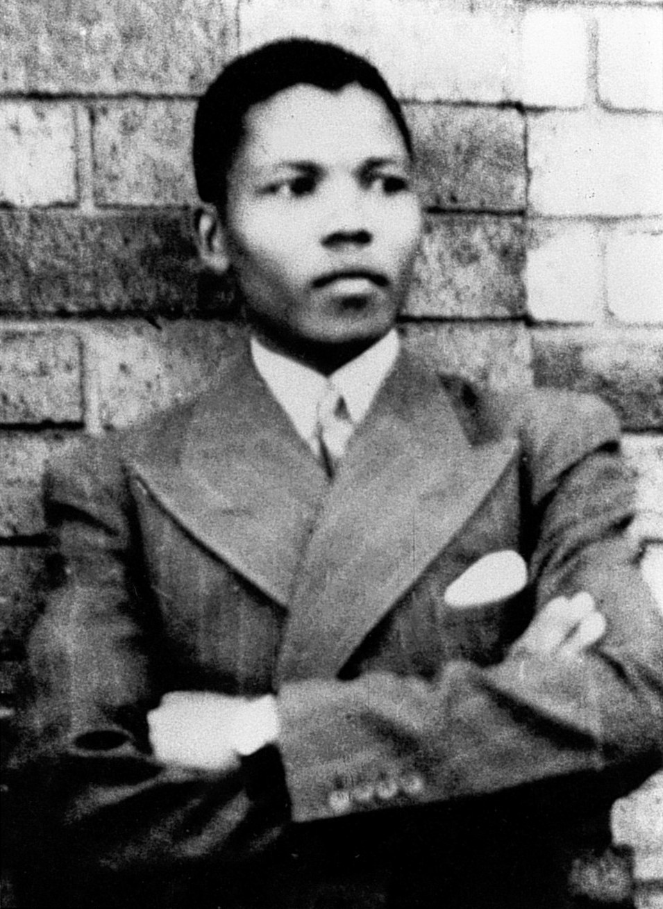
청년 시절의 넬슨 만델라 · 1937년 무렵, 변호사의 길을 향해 가던 청년기의 초상. 식민지 흑인에게 닫혀 있던 거의 모든 문을 그는 하나씩 두드렸다. [Wikimedia Commons · Public Domain]
음케케즈웨니의 궁정에서 소년 만델라는 두 세계를 동시에 호흡하며 자랐다. 한쪽에는 조상과 부족의 구전 역사를 들려주는 늙은 추장들의 세계가 있었다. 그들의 이야기 속에서 코사족은 본래 자유롭고 평화로운 민족이었으나, 백인이 총과 성경을 들고 와 땅을 빼앗고 사람을 노예로 만들었다. 다른 한쪽에는 선교사 학교의 세계가 있었다. 거기서 만델라는 영어와 라틴어, 영국사와 성경을 배우며 식민 지배자의 문명을 흡수했다. 그는 이 두 세계 어느 한쪽도 버리지 않았다. 부족의 자긍심과 서구의 지식을 모두 자기 것으로 삼은 이 이중의 교육이, 훗날 그가 흑인의 해방과 백인과의 공존을 동시에 추구하는 독특한 정치의 뿌리가 되었다.
부족 회의에서는 신분이 높든 낮든, 가난하든 부유하든 누구나 발언할 수 있었다. 섭정은 모든 사람의 말을 끝까지 들은 뒤에야 마지막에 입을 열었고, 의견이 갈리면 합의가 이뤄질 때까지 회의를 계속했다. 만델라는 훗날 이렇게 적었다. 진정한 지도자란 양 떼를 모는 목자가 아니라, 가장 영리한 양이 앞장서게 두고 자기는 뒤에서 따라가는 사람이라고. 군림이 아니라 경청, 명령이 아니라 합의. 음케케즈웨니 궁정에서 본 그 풍경이 70년 뒤 진실화해위원회의 철학으로 이어졌다는 사실은, 한 사람의 어린 시절이 한 나라의 미래를 얼마나 멀리까지 결정하는지를 보여 준다.
소년은 클라크베리, 힐드타운을 거쳐 흑인 엘리트의 산실이던 포트헤어(Fort Hare) 대학에 입학했다. 당시 포트헤어는 사하라 이남 아프리카에서 흑인이 고등교육을 받을 수 있는 거의 유일한 대학이었고, 이곳에서 만델라는 훗날 아프리카 곳곳의 독립 지도자가 될 인물들과 함께 공부했다. 평생의 동지 올리버 탐보를 처음 만난 것도 이 시절이었다. 그러나 그는 학생 자치회 선거 방식에 항의하는 시위에 가담했다가 퇴학 위기에 몰렸고, 타협을 거부하면서 끝내 학교를 떠났다. 부당한 권위 앞에서 자기 양심을 꺾지 않는 그 고집이, 식민 권력에 대한 그의 첫 저항이었다.
고향으로 돌아온 그를 기다린 것은 섭정이 미리 정해 둔 정략 결혼이었다. 자기 인생의 가장 사적인 결정조차 남의 손에 맡겨지는 것을 견딜 수 없던 청년 만델라는, 또 다른 양자 저스티스와 함께 섭정의 소 몇 마리를 몰래 판 돈으로 기차표를 사 한밤중에 궁정을 빠져나왔다. 자유를 향한 그의 첫 도주였다. 한 추장의 양자가 광부와 사무원과 변호사로 살아갈 도시, 황금과 먼지와 차별이 뒤섞인 요하네스버그로 향한 이 무모한 출발이, 돌이켜 보면 한 변호사이자 혁명가, 그리고 한 나라의 첫 흑인 대통령의 출발선이었다. 그 자신은 그날 밤 그 기차 안에서 자기 앞에 놓인 길의 길이를 짐작조차 하지 못했을 것이다.
곁가지 ① — 두 개의 이름, 두 개의 세계
만델라는 일생 동안 자기 이름의 이중성을 의식했다. 코사어 이름 롤리흘라흘라는 부족과 조상의 세계에 속했고, 영국 이름 넬슨은 식민지 학교와 법정과 신문의 세계에 속했다. 그가 변호사 사무실을 열 때도, 재판정에 설 때도, 대통령 취임 선서를 할 때도 서류상의 이름은 넬슨이었다. 그러나 사석에서 그를 "마디바"라 부르면 그의 표정이 환해졌다고 동료들은 증언한다. 한 사람의 이름이 식민 지배의 흔적이면서 동시에 한 민족의 자긍심일 수 있다는 것, 만델라는 그 두 세계를 적대하게 두지 않고 자기 안에서 화해시킨 드문 인물이었다. 훗날 그가 백인의 언어 아프리칸스를 옥에서 배우고, 백인의 스포츠 럭비를 끌어안은 것도 같은 기질의 연장이었다.
[Source] Nelson Mandela, Long Walk to Freedom(자유를 향한 머나먼 길), 1·2장 · Nelson Mandela Foundation 인물 연보.
유럽
만델라가 태어난 1918년 11월, 제일 차 세계 대전이 끝났다. 다음 해 베르사유 조약이 유럽의 지도를 다시 그렸고, 같은 해 전 세계를 휩쓴 스페인 독감이 수천만 명을 앗아갔다.
러시아
볼셰비키 혁명 이듬해. 적군과 백군의 내전이 한복판이었고, 한 세기를 가를 사회주의 실험이 막 시작되고 있었다.
인도
간디가 남아프리카에서의 비폭력 저항(사티아그라하) 실험을 마치고 인도로 돌아온 지 몇 해. 1919년 암리차르 학살이 인도 독립 운동에 불을 붙인다. 비폭력과 폭력 사이의 같은 고민이, 30여 년 뒤 만델라에게 그대로 되돌아온다.
조선
일본 식민 통치 아래. 만델라가 첫돌을 맞기 직전인 1919년 3월, 조선에서 삼일운동이 일어났다. 식민지의 한 민족이 자결권을 외친 그 함성은, 같은 시기 지구 반대편에서 막 태어난 한 아이의 평생 과업과 기묘하게 포개진다.
Tabula I · 시골에서 도시로
트란스케이의 목동에서 요하네스버그의 변호사로 — 1918~1950년대
고향 트란스케이 요하네스버그 산업지대 1941년 도주 경로
한 추장의 양자가 정략 결혼을 피해 황금의 도시로 달아난 길. 시골의 부족 회의에서 배운 합의의 정치가, 도시의 광산과 법정에서 새 무기를 얻는다.
II
1941–1952년 · 요하네스버그
요하네스버그 · 변호사 · ANC 청년동맹
강의 듣기
"도시는 나에게 두 가지를 가르쳤다. 흑인이 어떻게 짓밟히는지, 그리고 흑인이 어떻게 싸울 수 있는지."
1941년, 스물세 살의 만델라가 도착한 요하네스버그는 금광 위에 세워진 도시였다. 지하 수 킬로미터의 갱도에서 수십만 명의 흑인 광부가 임금의 몇 분의 일을 받고 일했고, 도시 외곽의 흑인 거주 구역은 먼지와 양철 지붕으로 가득했다. 만델라는 처음에 광산의 야간 경비원으로 일했지만, 추장의 양자가 도주해 왔다는 사실이 알려지면서 쫓겨났다. 그 막막한 시기에 그의 인생을 바꾼 한 사람을 만난다. 부동산 중개인이자 정치 활동가였던 월터 시술루(Walter Sisulu)였다.
시술루는 만델라의 잠재력을 한눈에 알아보고, 백인 변호사 라자르 시델스키의 사무실에 견습 사무원 자리를 주선했다. 흑인이 법률 사무실에서 일하는 것 자체가 드물던 시절이었다. 만델라는 낮에는 사무실에서 일하고 밤에는 통신 과정으로 법학을 공부하며, 비트바테르스란트 대학(University of the Witwatersrand)의 법학부에 흑인 학생으로 등록했다. 강의실에서 그는 백인 학생들의 노골적인 멸시와, 동시에 평생의 동지가 될 진보적 백인·인도계·유대계 동료들을 함께 만났다. 인종을 넘어선 연대의 가능성을, 그는 책이 아니라 그 강의실에서 처음 체험했다.
1944년, 만델라는 시술루, 올리버 탐보(Oliver Tambo), 앤턴 렘베데 등과 함께 아프리카 국민회의 청년동맹(ANC Youth League)을 창립했다. 아프리카 국민회의(ANC, African National Congress)는 1912년에 결성된 남아프리카 흑인의 가장 오래된 정치 조직이었지만, 당시에는 청원과 진정 위주의 온건 노선에 머물러 있었다. 젊은 만델라 세대는 이 점에 답답함을 느꼈다. 그들은 대중 동원, 파업, 불복종 같은 더 적극적인 행동주의를 ANC에 불어넣으려 했다. 같은 1944년, 만델라는 시술루의 사촌인 간호사 에블린 마세(Evelyn Mase)와 결혼해 네 자녀를 두었다. 정치에 점점 더 깊이 빠져드는 남편과 가정을 지키려는 아내 사이의 균열은, 훗날 만델라의 사생활을 평생 따라다니는 그늘의 시작이었다.
만델라가 만난 동지들은 인종의 경계를 넘어 있었다. 공산당원 조 슬로보, 인도계 활동가 아마드 카트라다, 유대계 변호사들이 그의 곁에 있었다. 백인 정권은 흑인의 저항을 "외부 공산주의자의 선동"으로 몰았지만, 만델라가 그 강의실과 거리에서 배운 진실은 정반대였다. 정의를 향한 갈망에는 피부색이 없다는 것이었다. 이 다인종 연대의 경험이, 훗날 그가 백인을 적이 아니라 함께 새 나라를 세울 동료로 끌어안을 수 있었던 토대가 되었다. 그는 흑인만의 해방이 아니라 모두의 해방을 꿈꾼 드문 혁명가였다.
요하네스버그의 흑인 거주구 알렉산드라에서의 가난한 셋방살이는 그에게 또 다른 학교였다. 버스 요금조차 아끼려고 매일 왕복 수십 리를 걸어 출근하던 그는, 거리에서 흑인 노동자들이 겪는 모욕과 빈곤을 자기 몸으로 겪었다. 책으로 배운 정의가 아니라, 굶주린 이웃과 통행증 단속에 떠는 사람들 사이에서 자라난 정의였다. 훗날 그는 이렇게 회고했다. 자신이 자유의 투사가 된 것은 어느 한순간의 각성 때문이 아니라, 매일매일 겪은 수천 가지 모욕이 쌓이고 쌓여 더는 참을 수 없게 된 결과였다고. 한 사람의 신념은 거대한 사건이 아니라 일상의 축적에서 태어난다는 통찰이었다.
변호사로서 만델라가 마주한 법정 풍경은 그 자체로 부조리극이었다. 흑인 피고는 자기 운명을 결정하는 법의 언어를 알지 못한 채 끌려와 형을 선고받았다. 어떤 백인 판사는 흑인 변호사 만델라가 자기 법정에 서는 것조차 모욕으로 여겼고, 백인 증인이 흑인 변호사의 반대 신문에 답하기를 거부하는 일도 있었다. 그러나 만델라는 이런 모욕을 위엄으로 되받았다. 그는 법의 논리를 누구보다 정확하게 구사하며, 흑인은 무지하고 열등하다는 전제 자체를 매 재판마다 무너뜨렸다. 법이 억압의 도구일 때조차, 그 법을 가장 잘 아는 사람이 흑인일 수 있다는 사실은 그 자체로 조용한 혁명이었다.
1952년, 만델라는 동지 올리버 탐보와 함께 "만델라와 탐보(Mandela and Tambo)"라는 이름의 법률 사무소를 요하네스버그 도심에 열었다. 남아프리카 최초의 흑인 변호사 합동 사무소였다. 사무실 앞에는 통행법 위반, 토지 강제 철거, 임금 체불, 부당 체포로 고통받는 흑인 의뢰인들이 매일 길게 줄을 섰다. 만델라는 법정에서 백인 판사 앞에 당당히 선 거의 유일한 흑인 변호사였고, 그의 큰 키와 또렷한 목소리, 정장 차림은 그 자체로 하나의 저항이었다. 법이 흑인을 짓밟는 도구일 때, 그 법의 언어를 흑인이 직접 구사한다는 것이 어떤 의미인지를 그는 매일 증명했다.
법정에 들어설 때마다 나는 흑인은 열등하다는 그 거대한 거짓말과 싸우고 있었다. 내가 유능한 변호사라는 사실 자체가, 그 거짓말에 대한 가장 조용한 반박이었다.
Nelson Mandela, Long Walk to Freedom, 법률가 시절
1948년 무렵의 남아프리카
총인구약 1,250만 명
흑인 비율약 68% (그러나 참정권 없음)
백인 비율약 21% (모든 정치권력 독점)
흑인 변호사 수전국에 극소수 (만델라·탐보가 대표)
흑인 평균 임금같은 일을 하는 백인의 약 1/5~1/8
미국
제이 차 세계 대전 직후. 남부의 인종 분리(짐 크로) 법이 여전히 굳건했고, 흑인 민권 운동이 막 태동하고 있었다. 만델라의 ANC와 마틴 루서 킹의 미국 민권 운동은 1950~60년대에 서로 멀리서 영향을 주고받는다.
인도
1947년 인도가 영국으로부터 독립. 식민지가 스스로를 통치할 수 있다는 증명은, 아프리카 전역의 해방 운동에 거대한 용기를 주었다.
한국
1945년 해방, 1948년 대한민국 정부 수립. 한 식민지가 해방의 환희와 분단의 비극을 동시에 겪던 시기였다.
III
1948–1960년 · 남아프리카 전역
아파르트헤이트와의 첫 싸움
강의 듣기
"그들은 법으로 한 민족을 외국인으로 만들었다. 자기 조상의 땅에서, 자기 나라의 이방인으로."
1948년 5월, 남아프리카 백인 총선에서 다니엘 말란이 이끄는 국민당(National Party)이 승리했다. 그들이 내건 한 단어가 곧 한 시대의 이름이 되었다. 아파르트헤이트(Apartheid), 아프리칸스어로 "분리됨"이라는 뜻이었다. 인종 차별 자체는 그 전부터 있었지만, 국민당은 그것을 빈틈없는 법체계로 완성했다. 인종을 백인·흑인·컬러드(혼혈)·인도계로 강제 등록하는 인구등록법, 거주 지역을 인종별로 가르는 집단지역법, 다른 인종 간 결혼과 성관계를 범죄로 만든 법, 흑인은 늘 통행증(pass)을 지녀야 하고 그것이 없으면 자기 나라 안에서 체포되는 통행법까지. 흑인은 같은 학교, 같은 병원, 같은 식당, 같은 벤치, 같은 화장실을 백인과 함께 쓸 수 없었다.
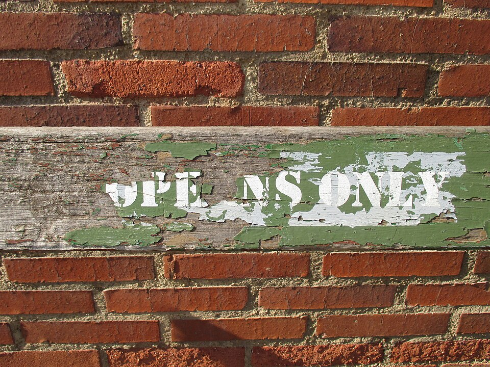
아파르트헤이트의 표지 · "유럽인 전용 / Slegs vir Blankes". 1953년 공공시설분리법 이후 남아프리카의 거의 모든 공공장소가 인종별로 갈라졌다. 흑인은 자기 나라에서 외국인보다 못한 자리에 놓였다. [Wikimedia Commons · Public Domain]
ANC는 이 거대한 억압 체계 앞에서 더 이상 청원만으로는 안 된다고 판단했다. 1952년, ANC는 인도계 조직과 손잡고 불복종 운동(Defiance Campaign)을 벌였다. 약 8,500명의 흑인·인도계·컬러드가 의도적으로 인종 분리 법을 어겼다. 백인 전용 우체국 창구에 줄을 서고, 백인 전용 벤치에 앉고, 통행증 없이 거리를 걸었다. 그들은 저항하지 않고 순순히 체포되어 감옥을 가득 채웠다. 간디의 사티아그라하에서 배운 비폭력 불복종 전술이었다. 만델라는 이 운동의 전국 자원봉사 총책임자(Volunteer-in-Chief)로서 처음으로 전국적 지도자의 반열에 올랐다.
1955년, ANC와 동맹 조직들은 요하네스버그 근교 클립타운에 약 3,000명의 대표를 모아 인민의회(Congress of the People)를 열고 자유 헌장(Freedom Charter)을 채택했다. 그 첫 문장은 단순하고 강력했다. "남아프리카는, 흑인이든 백인이든, 그 안에 사는 모든 사람의 것이다." 헌장은 만인의 평등한 권리, 토지의 공정한 분배, 법 앞의 평등, 노동과 교육의 권리를 선언했다. 백인을 바다로 몰아내자는 인종 보복의 언어가 아니라, 모두가 함께 사는 비인종 민주주의의 청사진이었다. 이 헌장이 평생 만델라의 정치적 신조가 되었고, 1994년 새 헌법의 정신적 뿌리가 되었다.
정권은 이를 공산주의 반역으로 몰았다. 1956년, 만델라를 포함한 156명이 반역죄로 체포되어 길고 긴 반역 재판(Treason Trial)에 회부되었다. 재판은 1961년까지 무려 5년을 끌었고, 결국 전원 무죄로 끝났다. 그러나 그 사이 남아프리카의 공기는 결정적으로 달라졌다.
아파르트헤이트는 단지 법의 문제가 아니라 한 사람의 삶 전체를 좌우하는 그물이었다. 흑인 아이는 백인 아이와 다른 학교에서, 다른 교과서로, 일부러 낮게 설계된 교육(이른바 반투 교육)을 받았다. 교육부 장관은 흑인에게 고등 수학을 가르치는 것은 그들이 결코 쓸 일이 없을 능력을 주는 헛된 일이라고 공언했다. 흑인은 의사도, 판사도, 기술자도 될 필요가 없으니 그저 백인 사회의 노동력으로 길러지면 된다는 논리였다. 한 민족 전체를 처음부터 열등하게 만들도록 설계된 시스템, 그것이 아파르트헤이트의 진짜 얼굴이었다. 만델라가 변호사가 되어 법정에 선 것 자체가 이 거대한 설계에 대한 정면 도전이었다.
1960년 3월 21일, 트란스발의 흑인 거주구 샤프빌(Sharpeville)에서 통행법에 항의하는 평화 시위대를 향해 경찰이 발포했다. 69명이 죽고 180여 명이 다쳤다. 많은 이들이 도망치다 등 뒤에서 총을 맞았다. 이 학살은 전 세계에 충격을 주었고, 유엔이 처음으로 남아프리카 인종 정책을 공식 규탄하는 계기가 되었다. 정권은 비상사태를 선포하고 ANC와 범아프리카회의(PAC)를 불법 조직으로 지정했다. 합법적이고 평화로운 저항의 길이 한순간에 모두 막힌 것이다. 만델라와 동지들 앞에는 이제 두 갈래의 길만 남았다. 굴복하거나, 다른 방법을 찾거나.
곁가지 ① — 통행증, 종이 한 장의 폭력
아파르트헤이트의 가장 일상적인 폭력은 총이 아니라 한 권의 작은 수첩, 통행증이었다. 16세 이상 모든 흑인 남성(나중에는 여성도)은 이름·사진·고용주·거주 허가가 적힌 도무북(dompas)을 늘 지녀야 했다. 백인 지역에 머물 권리, 일할 권리, 가족과 함께 살 권리가 모두 이 종이 한 장에 달려 있었다. 통행증을 집에 두고 나왔다는 이유만으로 매년 수십만 명이 체포되었다. 1956년에는 흑인 여성 약 2만 명이 통행증 확대에 반대해 프리토리아 정부 청사로 행진하며 외쳤다. "당신이 여인을 건드렸으니, 당신은 바위를 건드렸다." 샤프빌 학살의 직접 도화선도 바로 이 통행증이었다. 한 사회가 종이 한 장으로 사람의 자유를 통제할 때, 그 종이를 불태우는 것이 곧 혁명의 시작이 된다.
[Source] South African History Online(SAHO), 'Pass Laws in South Africa' · 1956 Women's March 기록 · Apartheid Museum 상설 전시.
곁가지 ② — 같은 길을 간 두 사람, 만델라와 루툴리
이 시기 ANC의 의장은 만델라가 아니라 줄루 추장 출신의 앨버트 루툴리(Albert Luthuli)였다. 그는 비폭력 원칙을 끝까지 지킨 인물로, 1960년 아프리카인 최초로 노벨 평화상을 받았다. 만델라는 루툴리를 깊이 존경했지만, 샤프빌 이후 비폭력만으로는 충분치 않다고 판단하면서 두 사람의 노선은 미묘하게 갈라진다. 흥미로운 것은, 33년 뒤인 1993년 만델라가 데 클레르크와 함께 받은 노벨 평화상이 사실상 루툴리에서 시작된 남아프리카 평화 운동의 한 매듭이었다는 점이다. 한 운동의 정신은 한 사람이 아니라 여러 세대의 손을 거쳐 완성된다.
[Source] Nobel Prize 공식 기록(Luthuli 1960, Mandela·de Klerk 1993) · Albert Luthuli, Let My People Go.
미국
1955년 몽고메리 버스 보이콧, 1960년 앉아 있기(sit-in) 운동. 마틴 루서 킹의 비폭력 민권 운동이 전성기로 향하고 있었다. 같은 해 같은 무기(비폭력)로 싸우던 두 대륙의 흑인들.
아프리카
1960년은 "아프리카의 해"였다. 한 해에만 열일곱 개 나라가 식민 지배에서 독립했다. 대륙 전체가 해방의 물결에 휩싸였지만, 정작 남아프리카만은 백인 소수 지배가 더 단단해지고 있었다.
한국
1960년 4월, 사일구 혁명으로 이승만 정권이 무너졌다. 같은 봄, 지구의 두 곳에서 시민의 피가 거리에 흘렀다.
IV
1961–1962년 · 지하 · 아프리카 순회
민족의 창 — 무장 투쟁의 결정
강의 듣기
"50년 동안 비폭력으로 문을 두드렸지만, 그들은 더 단단히 문을 잠갔다. 이제 다른 방법을 고민할 때가 되었다."
샤프빌 학살과 ANC 불법화 이후, 만델라는 지하로 숨어들었다. 변장한 채 농장 일꾼, 운전사, 요리사 행세를 하며 경찰의 추적을 피해 다녔다. 신문은 그를 좀처럼 잡히지 않는 인물이라는 뜻으로 "검은 핌퍼넬(Black Pimpernel)"이라 불렀다. 이 시기에 그는 평생 가장 무거운 결단을 내린다. 1961년, 만델라는 ANC의 무장 조직 "움콘토 웨 시즈웨(Umkhonto we Sizwe)", 곧 "민족의 창(Spear of the Nation)", 약칭 MK를 창설하고 그 첫 사령관이 되었다.
이 결정은 결코 가볍지 않았다. ANC는 반세기 동안 비폭력 원칙을 지켜 온 조직이었고, 의장 루툴리를 비롯한 많은 지도자가 무장 노선에 깊은 우려를 표했다. 만델라 자신도 평생 간디의 비폭력을 존경해 온 사람이었다. 그러나 그는 이렇게 판단했다. 정권이 모든 평화적 저항의 길을 총칼로 막아 버린 이상, 비폭력은 더 이상 전술이 아니라 자살이 되었다고. MK는 처음부터 인명 살상이 아니라 발전소·송전탑·정부 건물 같은 상징적 시설에 대한 사보타주를 노선으로 택했다. 가능한 한 사람을 죽이지 않으면서 정권에 타격을 주려는, 무장 투쟁 안에서도 절제된 선택이었다.
비폭력이 헛된 전술이 되고, 평화로운 저항이 오직 더 큰 탄압으로만 돌아올 때, 그때는 무기를 들 수밖에 없는 시점이 온다. 우리는 50년 동안 폭력을 피했다. 폭력을 시작한 것은 우리가 아니라 정부였다.
Nelson Mandela, 리보니아 재판 진술, 1964
1962년 초, 만델라는 비밀리에 국경을 넘었다. 새로 독립한 아프리카 여러 나라를 돌며 ANC와 MK에 대한 외교적·재정적 지원을 호소하고, 직접 군사 훈련을 받기 위해서였다. 그는 에티오피아 아디스아바바에서 열린 범아프리카 회의에서 연설했고, 알제리에서 막 프랑스를 몰아낸 민족해방전선(FLN)의 게릴라전을 견학했으며, 모로코·이집트·가나·기니 등을 거쳤다. 런던에 들러 영국 노동당 정치인들과 망명 동지 올리버 탐보를 만나기도 했다. 한 나라 안의 변호사였던 그가, 이 여정을 통해 아프리카 해방이라는 더 큰 무대 위의 인물로 성장했다.
이 결단의 무게를 이해하려면, 당시 만델라가 무엇을 포기했는지를 보아야 한다. 그는 변호사로서 안정된 삶을 살 수도 있었다. 그러나 무장 조직의 사령관이 된다는 것은 곧 평생 도망자나 죄수로, 혹은 죽음으로 끝날 운명을 스스로 택하는 일이었다. 그는 사보타주조차 사람을 다치게 할 위험이 있음을 알았고, 한번 폭력의 문을 열면 그것을 닫기가 얼마나 어려운지도 알았다. 그럼에도 그는 무한정 매를 맞으면서 비폭력만을 고집하는 것은 도덕이 아니라 무책임이라고 결론지었다. 평화를 원하는 자가 어쩔 수 없이 무기를 들 때, 그 무기는 증오의 도구가 아니라 마지막 협상의 수단이어야 한다는 것이 그의 신념이었다. 이 절제된 폭력관이, 훗날 그가 다시 평화의 협상가로 돌아올 수 있었던 바탕이 되었다.
그러나 7개월의 여정을 마치고 귀국한 직후인 1962년 8월 5일, 만델라는 콰줄루나탈 인근 도로에서 백인 운전사로 위장한 채 경찰에 체포되었다. 너무도 정확한 검거였기에, 훗날 미국 중앙정보국(CIA)이 그의 이동 정보를 남아프리카 정부에 넘겼다는 의혹이 끊임없이 제기되었다. 2016년에는 당시 CIA 요원을 자처한 인물이 자신이 제보했다고 증언하기도 했으나, 정보기관의 공식 확인은 없어 여전히 정설로 단정하기는 어렵다. 어느 쪽이든, 한 나라의 자유 투사가 강대국 정보전의 그물에 걸렸을 가능성은 냉전 시대 남아프리카가 처한 국제 정치의 한 단면을 보여 준다.
체포된 만델라는 국외 출국과 파업 선동 혐의로 5년 형을 선고받았다. 그러나 이것은 시작에 불과했다. 1963년 7월, 경찰이 요하네스버그 북쪽 리보니아의 한 농장을 급습하면서, 그를 기다리는 것은 사형이 가능한 훨씬 더 큰 재판이었다.
움콘토 웨 시즈웨(MK)의 노선
창설1961년 12월 16일
뜻민족의 창 (Spear of the Nation)
초대 사령관넬슨 만델라
1차 노선사보타주 (인명 살상 회피)
표적발전소·송전탑·정부 시설
곁가지 ① — 검은 핌퍼넬
지하 활동 시절 만델라의 별명 "검은 핌퍼넬"은, 프랑스 혁명기를 배경으로 한 소설 『스칼렛 핌퍼넬』의 잡히지 않는 영웅에서 따온 것이다. 그는 변장의 달인이었다. 작업복을 입은 정원사로, 운전기사 모자를 쓴 기사로, 안경을 낀 학자로 모습을 바꾸며 비밀 집회를 조직했다. 한번은 변장한 채 길에서 마주친 백인 경찰에게 태연히 길을 물어보고 지나쳤다는 일화도 전한다. 그러나 이 화려한 지하 생활은 동시에 그의 가정을 산산조각 냈다. 아내 위니와 어린 두 딸은 남편이자 아버지가 언제 잡힐지, 살아 있기는 한지 모르는 채로 살아야 했다. 영웅의 신화 뒤에는 늘 한 가족의 침묵하는 희생이 있었다.
[Source] Nelson Mandela, Long Walk to Freedom, 지하 활동기 · SAHO, 'The Black Pimpernel'.
곁가지 ② — 권투 선수 만델라
덜 알려진 사실 하나. 청년 만델라는 열정적인 아마추어 권투 선수였다. 그는 새벽마다 요하네스버그의 허름한 체육관에서 샌드백을 두드렸고, 권투를 단순한 운동이 아니라 일종의 철학으로 여겼다. 링 위에서는 인종도 지위도 없고 오직 기량과 의지만 있다는 것, 그리고 상대를 미워해서가 아니라 자기 자신을 단련하기 위해 싸운다는 것. 그는 훗날 투쟁의 전략을 권투에 빗대 설명하곤 했다. 상대의 움직임을 읽고, 인내심 있게 기다리다, 결정적 순간에 정확히 한 방을 날리는 것. 협상 테이블에서도 그는 늘 이 권투 선수의 호흡을 잃지 않았다. 감정에 휩쓸려 휘두르는 주먹이 아니라, 냉정하게 때를 기다리는 절제된 한 방이 그의 방식이었다.
[Source] Nelson Mandela, Long Walk to Freedom · Anthony Sampson, Mandela: The Authorised Biography.
알제리
1962년 알제리가 7년 전쟁 끝에 프랑스로부터 독립했다. 만델라가 그곳에서 견학한 게릴라전의 경험은 MK 전략에 직접 영향을 주었다.
쿠바
1962년 10월 쿠바 미사일 위기. 세계가 핵전쟁 직전까지 갔다. 냉전의 한복판에서, 남아프리카 백인 정권은 자신을 "공산주의 방벽"으로 포장하며 서방의 묵인을 얻으려 했다.
한국
1961년 오일륙 군사정변. 만델라가 무장 투쟁을 결단하던 바로 그 무렵, 한반도에서는 군부가 권력을 잡고 있었다.
V
1963–1964년 · 프리토리아 법정
리보니아 재판 — 죽을 준비가 된 이상
강의 듣기
"피고석에 선 한 사람이, 자신을 심판하는 법정 전체를 도리어 심판대 위에 올렸다."
1963년 7월 11일, 경찰이 요하네스버그 북쪽 리보니아의 릴리슬리프(Liliesleaf) 농장을 급습했다. 그곳은 ANC와 MK 지도부의 비밀 본부였다. 경찰은 무장 투쟁 계획서, MK의 게릴라전 구상 문서, 만델라가 아프리카를 돌며 쓴 일기까지 무더기로 압수했다. 이미 5년 형을 살고 있던 만델라는 농장에서 체포된 동지들과 함께 새로운 재판에 끌려 나왔다. 사보타주와 정부 전복 음모. 사형이 가능한 죄목이었다. 이것이 남아프리카 현대사의 분수령이 된 리보니아 재판(Rivonia Trial)이다.
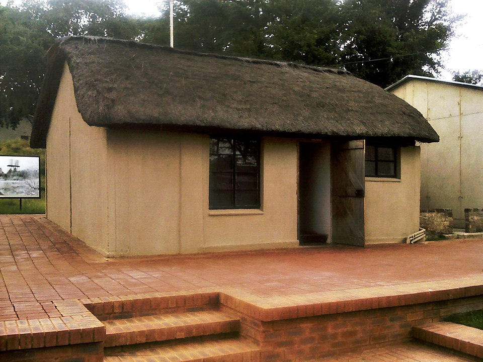
릴리슬리프 농장 · 요하네스버그 북쪽 리보니아의 ANC·MK 비밀 거점. 1963년 이곳의 급습이 리보니아 재판의 발단이 되었다. 오늘날에는 해방 운동을 기리는 기념관이자 박물관이다. [Wikimedia Commons · CC BY-SA]
피고들에게 거의 사형이 확실해 보였다. 변호인단은 만델라에게 증인석에서 검사의 반대 신문에 대응하는 통상적 방어를 권했다. 그러나 만델라는 다른 길을 택했다. 그는 증인석이 아니라 피고석에서, 반대 신문을 받지 않는 대신 진술서를 직접 낭독하겠다고 했다. 변호인 조지 비조스가 우려하자 만델라는 답했다. 자신은 변호받으러 온 것이 아니라 증언하러 왔다고. 1964년 4월 20일, 프리토리아 최고법원 법정에서 그는 무려 네 시간에 걸친 진술을 시작했다.
이 선택은 법률적으로는 위험하기 짝이 없는 것이었다. 진술서를 낭독하면 검사의 반대 신문을 통해 무죄를 다툴 기회를 스스로 포기하는 셈이었다. 그러나 만델라는 이 재판이 자기 한 사람의 유무죄를 가리는 자리가 아니라, 아파르트헤이트라는 체제 전체가 심판받는 무대임을 꿰뚫어 보았다. 그는 피고석을 연단으로 바꾸었다. 자신을 심판하려는 법정을 향해, 도리어 그 법정이 떠받치는 부정의한 체제를 고발한 것이다. 사형이 두려워 변명하는 대신, 죽음을 무릅쓰고 신념을 선언함으로써 그는 패배가 확실한 재판을 도덕적 승리로 뒤집었다. 법의 언어로 법의 불의를 고발하는 변호사다운 역설이 거기 있었다.
그 진술은 한 편의 정치적 자서전이자 도덕적 선언이었다. 그는 어린 시절 부족 회의에서 배운 민주주의에서 시작해, ANC가 반세기 동안 지킨 비폭력의 역사, 그것이 어떻게 정권의 폭력 앞에 무너졌는지, 왜 MK가 사보타주를 택했는지, 그리고 자신이 추구하는 자유가 무엇인지를 차분하고 논리정연하게 풀어냈다. 법정은 침묵에 잠겼다. 그리고 마지막 단락에서 그는 안경을 벗고, 판사를 똑바로 바라보며 종이에서 눈을 떼고 천천히 말했다. 이 마지막 대목이 20세기 정치사에서 가장 유명한 진술 가운데 하나가 되었다.
나는 평생 아프리카 사람들의 이 싸움에 헌신해 왔습니다. 나는 백인 지배에 맞서 싸웠고, 흑인 지배에도 맞서 싸웠습니다. 나는 모든 사람이 더불어 평등하고 자유롭게 사는 민주적이고 자유로운 사회의 이상을 소중히 품어 왔습니다. 그것은 내가 그것을 위해 살고, 그것을 이루기를 바라는 이상입니다. 그러나 만약 그래야만 한다면, 그것은 내가 그것을 위해 죽을 준비가 되어 있는 이상이기도 합니다.
Nelson Mandela, 리보니아 재판 진술, 1964년 4월 20일
"내가 그것을 위해 죽을 준비가 되어 있는 이상(an ideal for which I am prepared to die)." 사형을 앞둔 피고가 죽음 자체를 무기로 삼은 순간이었다. 1964년 6월 12일, 콰르트루스 드 베트 판사는 판결을 내렸다. 검찰의 요구와 달리 사형이 아니라 종신형이었다. 국제 사회의 압박과 만델라의 진술이 남긴 도덕적 무게가 판사의 손을 움직였다는 해석이 많다. 당시 마흔여섯 살이던 만델라는 동지 일곱 명과 함께, 그날 밤 케이프타운 앞바다의 외딴 섬으로 이송되었다. 그곳에서 그는 인생의 가장 긴 장을 시작하게 된다.
리보니아 재판 (1963–1964)
발단1963.7 릴리슬리프 농장 급습
죄목사보타주·정부 전복 음모 (사형 가능)
핵심 진술1964.4.20, 약 4시간
판결1964.6.12 종신형 (사형 면함)
유죄 피고만델라 외 7인 → 로벤 섬 이송
곁가지 ① — 묻혀 있던 녹음테이프
리보니아 재판의 진술은 오랫동안 글로만 전해졌다. 그러나 남아프리카 국립기록보관소에 보관돼 있던 디터폰 녹음 원반이 2000년대 들어 디지털로 복원되면서, 1964년 법정에 울린 만델라의 실제 목소리가 반세기 만에 되살아났다. 깊고 또렷한 그 음성으로 "죽을 준비가 된 이상"을 다시 듣는 일은, 활자로 읽을 때와는 전혀 다른 전율을 준다. 한 사람의 목소리가 한 시대의 증거로 남는다는 것, 그리고 그것이 사라지지 않도록 누군가가 낡은 테이프를 끝까지 지켰다는 것 또한 역사의 일부다.
[Source] South African National Archives · Nelson Mandela Foundation, 'Rivonia Trial recordings' 복원 프로젝트.
곁가지 ② — 변호인 조지 비조스
만델라의 변호인 가운데 그리스계 이민자 출신 조지 비조스(George Bizos)가 있었다. 그는 만델라의 진술 초안에서 "죽을 준비가 되어 있다"는 문장 바로 앞에 "만약 그래야만 한다면(if needs be)"이라는 단서를 넣자고 제안했다. 무모한 순교 선언이 아니라, 정의를 위해 죽음까지 감수하겠다는 절제된 결의로 들리게 하려는 한 마디였다. 결과적으로 이 작은 수정이 그 문장을 더 깊고 인간적으로 만들었다. 비조스는 이후로도 평생 만델라와 인권의 동지로 남았다. 역사의 거대한 문장조차 때로는 한 변호인의 신중한 단어 하나에 빚지고 있다.
[Source] George Bizos, Odyssey to Freedom · 리보니아 재판 변호인단 회고.
미국
1963년 8월 마틴 루서 킹의 "나에게는 꿈이 있습니다" 연설, 11월 케네디 암살, 1964년 민권법 통과. 같은 시기 지구 양편에서 두 흑인 지도자가 각자의 법정과 광장에서 같은 자유를 외치고 있었다.
영국
국제적으로 남아프리카에 대한 비판이 커지면서, 영국과 유럽에서 반아파르트헤이트 운동과 무기 금수 요구가 거세지기 시작했다.
한국
1964년 한일회담 반대 시위. 한 사회가 과거 식민의 청산 방식을 두고 격렬히 갈등하던 때였다.
Tabula II · 감옥의 군도
리보니아에서 로벤 섬으로 — 무장 투쟁과 27년 투옥 1960~1980년대
저항의 중심지 1964년 이송 경로 로벤 섬 투옥
남쪽 끝, 차가운 대서양 한가운데의 작은 섬. 정권은 만델라를 세상에서 가장 먼 곳에 가두었다고 믿었다. 그러나 그 섬은 곧 자유의 상징이 되었다.
VI
1964–1982년 · 로벤 섬
로벤 섬 — 18년의 채석장
강의 듣기
"감옥은 나에게서 18년을 빼앗았다. 그러나 나는 그 18년 동안, 내 적을 친구로 만드는 법을 배웠다."
로벤 섬(Robben Island)은 케이프타운 앞바다 약 7킬로미터 지점에 떠 있는 바람 거센 바위섬이다. 수백 년 동안 나병 환자 격리소이자 정치범 유배지로 쓰인 이 섬의 최고 보안 감옥, 그 B 구역(Section B)의 한 감방이 만델라의 새 거처가 되었다. 가로세로 약 2미터 남짓의 콘크리트 방. 침대도 의자도 없이 얇은 매트 한 장과 세면용 양동이 하나가 전부였다. 죄수 번호는 466/64, 1964년에 들어온 466번째 죄수라는 뜻이었다. 그는 흑인 정치범에게 매겨지는 가장 가혹한 D 등급으로 분류되어, 편지는 6개월에 한 통, 면회는 6개월에 한 번, 그것도 30분으로 제한되었다.
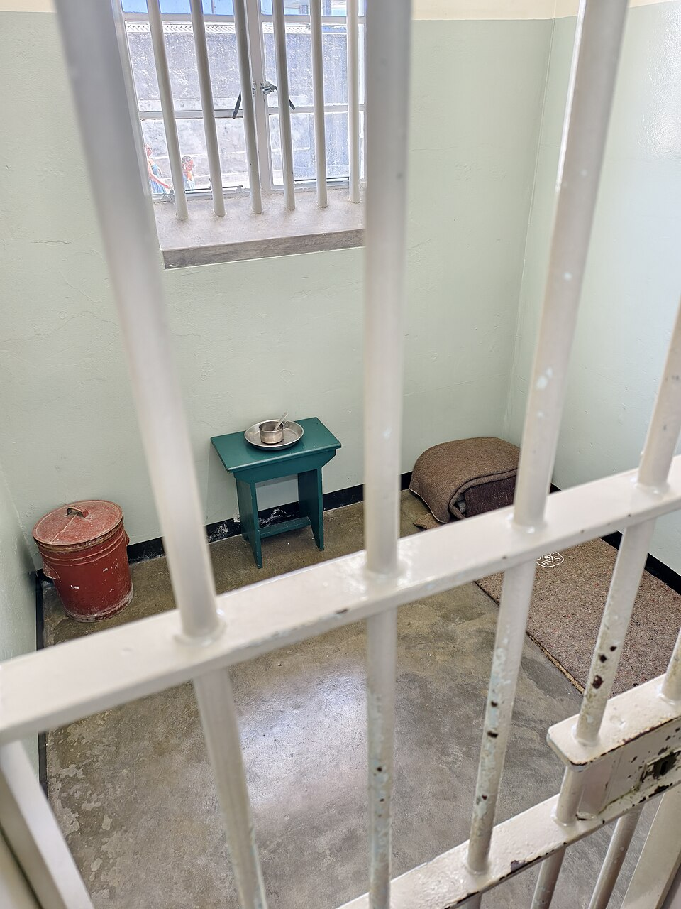
로벤 섬 B 구역 만델라의 감방 · 매트 한 장과 양동이 하나가 전부였던 약 4제곱미터의 방. 만델라는 이곳에서 인생의 18년을 보냈다. 오늘날 유네스코 세계문화유산이자 매년 수십만 명이 찾는 순례지다. [Wikimedia Commons]
낮에는 매일 섬의 석회암 채석장에서 곡괭이로 돌을 깨는 강제 노동이 이어졌다. 백색 석회암에 반사되는 강렬한 햇빛은 만델라의 눈을 평생 상하게 했다. 훗날 그가 사진 촬영 때 플래시를 꺼 달라고 부탁하곤 했던 것도 이 채석장에서 입은 손상 때문이었다. 추위, 단조로운 식사, 간수들의 모욕이 매일 반복되었다. 정권은 그를 세상에서 가장 먼 곳에 가두어, 사람들의 기억에서 지워 버리려 했다. 한동안 그의 사진을 신문에 싣는 것조차 법으로 금지되었다.
가족과의 단절은 무엇보다 견디기 힘든 형벌이었다. 아내 위니의 면회는 두꺼운 유리벽을 사이에 두고, 손도 잡지 못한 채 감시 속에서 짧게 이뤄졌다. 어린 딸들이 자라는 모습을 그는 오직 드물게 허락된 편지와 사진으로만 지켜보았다. 한번은 막내딸이 보낸 편지가 검열관의 가위질로 군데군데 잘려 나간 채 도착하기도 했다. 정권은 그의 육신뿐 아니라 그의 가족과의 정마저 끊으려 했다. 그러나 만델라는 이 단절 속에서도 아버지이기를 포기하지 않았다. 그는 옥중에서 딸들에게 인생의 조언을 담은 편지를 정성껏 써 보냈고, 그 편지들은 훗날 한 권의 책으로 묶여, 가장 가혹한 곳에서도 한 인간이 어떻게 사랑을 지켜냈는지를 증언한다.
그러나 만델라는 감옥을 다른 방식으로 살아냈다. 그는 변호사다운 끈기로 처우 개선을 요구하는 진정과 항의를 끝없이 제기해, 시간이 흐르며 독서·공부·운동의 권리를 조금씩 얻어냈다. 정치범들은 채석장과 감방에서 서로에게 역사·법·정치를 가르쳤고, 이 비공식 학습 공동체는 "로벤 섬 대학"이라 불렸다. 감옥이 곧 대학이 된 것이다. 만델라 자신도 통신 과정으로 런던 대학의 법학 학위 공부를 이어갔다. 정권이 사람을 가두어도 정신을 가둘 수는 없다는 것을, 이 섬은 거꾸로 증명했다.
섬의 일과는 단조롭고도 가혹했다. 새벽에 일어나 찬물로 씻고, 멀건 죽으로 아침을 때운 뒤 채석장으로 끌려갔다. 흑인 죄수는 백인 죄수보다 적은 양의, 더 형편없는 음식을 배급받았다. 반바지만 입어야 했고(긴 바지는 어른 남성의 상징이라 하여 허용되지 않았다), 겨울에도 얇은 담요 몇 장으로 대서양의 칼바람을 견뎌야 했다. 그러나 만델라와 동지들은 이 모든 모욕을 견디면서도 한 가지 원칙을 지켰다. 결코 비굴해지지 않는다는 것. 그들은 간수에게 존댓말을 강요당하면서도 자기 존엄만은 내주지 않았고, 부당한 처우에는 단식과 작업 거부로 맞섰다. 감옥은 육체를 가둘 수 있었지만 그들의 자존심까지 가두지는 못했다.
가장 결정적인 변화는 그의 적에 대한 태도였다. 만델라는 자신을 감시하는 백인 아프리카너 간수들을 적으로만 대하지 않았다. 그는 그들의 언어 아프리칸스(Afrikaans)를 옥중에서 배웠고, 그들의 역사와 럭비를 공부했으며, 한 사람 한 사람을 인간으로 대했다. 이유는 단순했다. 적의 언어와 마음을 이해하지 못하면 결코 그를 설득할 수 없다는 것이었다. 거칠던 간수들 중 일부는 세월이 흐르며 그를 존경하게 되었고, 어떤 이는 훗날 그의 친구가 되었다. 27년의 투옥은 형벌이었지만, 동시에 만델라가 화해의 정치를 미리 연습한 거대한 실험실이기도 했다.
적과 평화를 이루려면, 그 적과 함께 일해야 한다. 그러면 그는 당신의 동반자가 된다.
Nelson Mandela, Long Walk to Freedom
옥중에서도 가족의 비극은 막을 수 없었다. 1968년 그의 어머니가 세상을 떠났고, 1969년에는 첫 결혼에서 얻은 큰아들 템비가 스물네 살의 나이에 교통사고로 죽었다. 그는 두 장례식 모두 참석을 거부당했다. 자식이 죽어도 그 무덤가에 설 수 없는 것, 그것이야말로 감옥이 가하는 가장 잔인한 형벌이었다고 그는 적었다. 같은 시기 아내 위니는 바깥에서 끊임없는 가택연금과 구금, 고문에 시달렸다. 한 가족 전체가 한 사람의 신념의 무게를 함께 짊어지고 있었다.
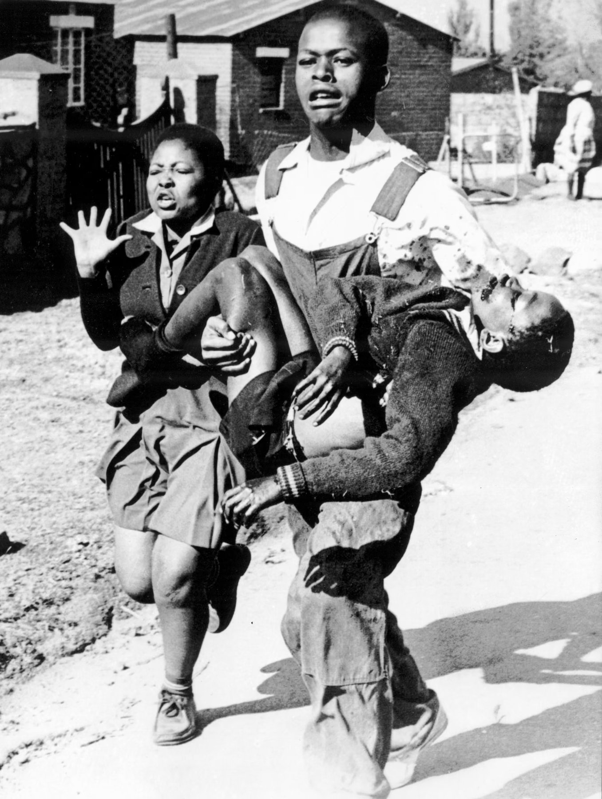
소웨토 봉기 · 1976년 6월 16일, 총에 맞은 13세 헥터 피터슨을 안고 달리는 청년. 만델라가 섬에 갇혀 있던 사이, 바깥의 새 세대가 들고일어났다. 이 한 장의 사진이 전 세계에 아파르트헤이트의 잔혹함을 알렸다. [Wikimedia Commons · 사진 Sam Nzima, 1976]
만델라가 섬에 갇혀 있는 동안, 바깥에서는 새로운 세대가 자라났다. 1976년 6월 16일, 요하네스버그의 흑인 거주구 소웨토에서 학교 교육을 억압 언어인 아프리칸스로 강제하는 데 반발한 학생 수천 명이 거리로 나섰다. 경찰이 발포했고, 첫 희생자 가운데 열세 살 헥터 피터슨이 있었다. 그를 안고 달리는 청년의 사진은 곧 아파르트헤이트의 야만을 상징하는 세계적 이미지가 되었다. 소웨토 봉기는 정권에 결정적 균열을 냈다. 그리고 거리의 새 세대는, 자신들이 태어나기도 전에 갇힌 한 죄수 만델라를 자유의 살아 있는 상징으로 받들기 시작했다. 정권이 지우려 했던 이름이, 침묵 속에서 오히려 더 거대해지고 있었다.
곁가지 ① — 정원과 원고
로벤 섬에서 만델라는 작은 텃밭을 가꿨다. 척박한 땅에 토마토와 고추, 양파를 심으며 그는 "한 지도자는 정원사와 같아야 한다"고 생각했다. 씨를 뿌리고, 물을 주고, 인내심을 갖고 결실을 기다리는 일. 동시에 그는 동지들의 도움을 받아 자서전 『자유를 향한 머나먼 길』의 초고를 몰래 써 내려갔다. 원고는 작은 글씨로 쓰여 텃밭 한구석에 묻히거나 다른 죄수의 출소 짐 속에 숨겨져 섬을 빠져나갔다. 한 부분은 발각되어 압수당했지만, 빠져나간 원고가 결국 1994년 출간된 자서전의 뼈대가 되었다. 감옥이 한 권의 책을 막지 못한 것이다.
[Source] Nelson Mandela, Long Walk to Freedom 서문 · Robben Island Museum, 'Mandela's garden' 전시.
곁가지 ② — 한 편의 시, 인빅터스
전하는 이야기에 따르면, 만델라는 옥중에서 영국 시인 윌리엄 어니스트 헨리의 시 「인빅터스(Invictus, 정복되지 않는)」를 거듭 외우며 마음을 다잡았다고 한다. "나는 내 운명의 주인이요, 나는 내 영혼의 선장이다"로 끝나는 이 시는 동료 죄수들에게도 위로가 되었다. 다만 만델라가 특히 즐겨 읊은 것은 셰익스피어 전집(이른바 '로벤 섬 성경')의 한 구절이었다는 증언도 있어, 어느 한 편만이 그를 지탱했다고 단정하기는 어렵다. 분명한 것은, 한 사람이 가장 어두운 곳에서 시 한 줄을 붙들고 자기 영혼의 주인 자리를 지켰다는 사실이다.
[Source] W. E. Henley, 'Invictus' · John Carlin, Playing the Enemy · Robben Island 수감자 증언(이설 병기).
모잠비크 · 앙골라
1975년 이웃 포르투갈 식민지들이 독립했다. 남아프리카 백인 정권은 사방이 흑인 독립국에 둘러싸이며 점점 고립되어 갔다.
미국 · 유럽
1970~80년대 전 세계 대학과 도시에서 남아프리카 투자 철회와 경제 제재 운동이 번졌다. "만델라를 석방하라"는 구호가 록 콘서트와 거리 시위의 노래가 되었다.
한국
1980년 오일팔 광주. 같은 시대, 또 다른 곳에서 시민들이 군대의 총 앞에 섰다. 만델라는 훗날 광주의 희생을 알고 깊은 연대를 표했다.
VII
1982–1990년 · 폴스무어 · 빅터 베르스터
폴스무어 · 빅터 베르스터 · 비밀 협상
강의 듣기
"한 죄수가 자신을 가둔 정부와, 자신의 자유를 놓고 협상을 시작했다. 그것도 동지들 몰래, 혼자서."
1982년, 만델라는 로벤 섬을 떠나 케이프타운 본토의 폴스무어(Pollsmoor) 교도소로 이감되었다. 동료 지도자 몇 명과 함께였다. 시설은 섬보다 나았지만, 더 중요한 변화는 따로 있었다. 1980년대 들어 남아프리카는 안팎으로 막다른 길에 몰리고 있었다. 안으로는 흑인 거주구의 봉기가 끊이지 않았고, 밖으로는 국제 경제 제재가 경제의 숨통을 죄었다. 정권도, ANC도, 군사적 승리만으로는 이 교착을 끝낼 수 없다는 사실을 서서히 깨닫고 있었다.
1980년대 중반의 남아프리카는 사실상 통치 불능 상태로 빠져들고 있었다. 흑인 거주구마다 비상사태가 선포되고 장갑차가 거리를 누볐지만, 저항은 오히려 거세졌다. 학교는 멈췄고, 공장은 파업으로 들끓었으며, 국제 사회의 제재로 통화 가치가 폭락했다. 백인 정권은 군사력으로 다수를 영원히 억누를 수 없다는 사실을, 그리고 ANC는 무장 투쟁만으로 정권을 무너뜨릴 수 없다는 사실을 서서히 인정해야 했다. 어느 쪽도 완전히 이길 수 없는 교착, 바로 그 교착이 역설적으로 협상의 문을 열었다. 만델라는 누구보다 먼저 이 사실을 읽어 냈다.
1985년, 만델라는 누구의 지시도 없이 스스로 정부와의 대화를 모색하기 시작했다. 그는 법무부 장관 코비 쿠체에게 면담을 요청했다. 이는 엄청난 위험을 무릅쓴 결정이었다. ANC 안의 강경파는 어떤 형태의 협상도 "배신(sellout)"으로 볼 수 있었고, 동지들의 사전 동의 없이 적과 마주 앉는 것은 지도자로서 치명적 비난을 부를 수 있었다. 그러나 만델라의 판단은 분명했다. 협상의 적기는 영원히 오지 않으며, 모두의 합의를 기다리다 보면 그 순간 자체가 사라진다. 누군가는 첫걸음을 내디뎌야 했고, 그 위험을 자기가 감당하기로 한 것이다.
나는 동지들과 상의할 수 없는 시점에 와 있었다. 어떤 결정은 지도자가 홀로 내려야 하고, 그 책임도 홀로 져야 한다. 협상의 적기란 따로 정해져 있지 않다. 만드는 것이다.
Nelson Mandela, Long Walk to Freedom, 협상의 시작
이 시기 만델라가 마주한 가장 큰 질문은 "누구를 믿을 것인가"였다. 정부는 그를 회유해 ANC와 갈라놓으려 했고, 일부 동지는 그가 적과 단둘이 만나는 것 자체를 의심했다. 그는 양쪽의 불신 사이에서 외줄을 탔다. 그가 끝까지 지킨 한 가지 선은 분명했다. 자기 개인의 석방을 위해서는 결코 협상하지 않는다는 것이었다. 정부가 폭력 포기를 조건으로 그만 풀어주겠다고 제안했을 때, 그는 단호히 거절했다. 자기 자유는 동족 전체의 자유와 분리될 수 없으며, 자유롭지 못한 백성을 두고 혼자 감옥을 나서는 것은 자유가 아니라 또 다른 굴종이라는 것이었다. 그는 딸 진지를 통해 이 거절의 메시지를 대중 집회에서 낭독하게 했고, 그 한 마디가 그를 더욱 거대한 상징으로 만들었다.
1988년, 만델라는 폐결핵을 앓은 뒤 빅터 베르스터(Victor Verster) 교도소의 한 독채 관사로 옮겨졌다. 감옥이라기보다 수영장 딸린 작은 집이었고, 요리사까지 배정되었다. 정권은 이 안락한 공간에서 그와 조용히 협상을 이어갔다. 동시에 만델라는 망명 중인 ANC 지도부에 비밀 전갈을 보내, 자신의 단독 대화가 ANC의 노선에서 벗어나지 않도록 끊임없이 조율했다. 혼자였지만 결코 독단은 아니었던, 위태로운 외줄타기였다.
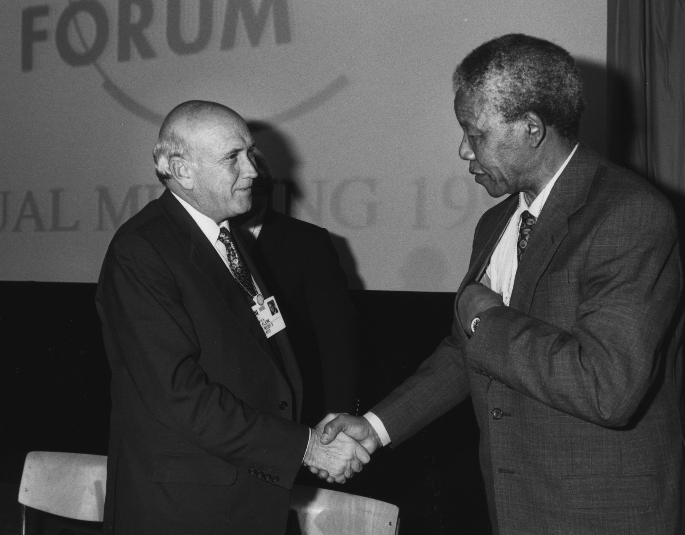
만델라와 F.W. 드 클레르크 · 1992년 1월 다보스 세계경제포럼. 옛 죄수와 옛 정권의 수장이 한 무대에 올라 새 남아프리카를 토론했다. 이듬해 두 사람은 노벨 평화상을 공동 수상한다. [Wikimedia Commons · CC]
1989년, 병약한 P.W. 보타의 뒤를 이어 F.W. 드 클레르크(F.W. de Klerk)가 대통령이 되었다. 강경 보수파로 알려졌던 그는 뜻밖에도 시대의 흐름을 읽은 현실주의자였다. 같은 해 12월, 만델라와 드 클레르크가 처음 만났다. 두 사람의 만남은 곧 한 시대를 끝내고 다른 시대를 여는 분수령이 되었다. 그리고 1990년 2월 2일, 드 클레르크는 의회 연설에서 세계를 놀라게 한 선언을 했다. ANC를 비롯한 모든 해방 조직의 불법화를 해제하고, 정치범을 석방하며, 넬슨 만델라를 무조건 풀어주겠다는 것이었다. 27년의 옥살이가 끝을 향해 가고 있었다.
협상으로 가는 길 (1982–1990)
1982로벤 섬 → 폴스무어 이감
1985만델라 단독 비밀 대화 개시
1988빅터 베르스터 관사로 이동
1989.12만델라·드 클레르크 첫 회담
1990.2.2드 클레르크, ANC 합법화·석방 선언
곁가지 ① — 적을 알기 위해 적의 언어를 배운 사람
만델라가 옥중에서 아프리칸스를 배운 것은 단순한 교양이 아니라 전략이었다. 협상 테이블에서 그는 백인 관료들의 모국어로 그들의 시인을 인용하고, 그들의 럭비 영웅을 거론했다. 적의 문화를 존중하는 이 태도는 상대를 무장 해제시켰다. 한 정부 협상 대표는 훗날 이렇게 회고했다. 만델라와 마주 앉으면 그가 죄수이고 우리가 권력자라는 사실을 자꾸 잊게 되었다고. 그는 늘 그 방에서 가장 품위 있는 사람이었다. 화해란 적을 닮는 것이 아니라, 적조차 존중하지 않을 수 없게 만드는 힘이라는 것을 그는 협상장에서 매일 증명했다.
[Source] Allister Sparks, Tomorrow is Another Country · 남아프리카 협상 대표단 회고록.
동유럽
1989년 베를린 장벽이 무너지고 동유럽 공산권이 붕괴했다. 냉전이 끝나면서, 백인 정권이 내세우던 "공산주의 방벽" 논리도 명분을 잃었다. 세계사의 큰 바람이 남아프리카의 빗장을 흔들었다.
중국
같은 1989년 6월 톈안먼 사건. 한쪽에서는 광장의 외침이 탱크에 짓밟혔고, 다른 쪽에서는 한 죄수와 정권이 협상 테이블에 앉았다. 같은 시대, 정반대의 결말.
한국
1987년 유월 항쟁과 직선제 개헌. 권위주의가 시민의 힘으로 무너지던 시기, 남아프리카 또한 같은 전환점을 향해 가고 있었다.
VIII
1990년 2월 11일 · 케이프타운
자유 — 27년 만의 첫 발걸음
강의 듣기
"일흔한 살의 사내가 27년 만에 자기 두 발로 감옥의 문을 걸어 나왔다. 그 한 걸음을 전 세계가 숨죽여 지켜보았다."
1990년 2월 11일 일요일 오후, 케이프타운 동쪽 빅터 베르스터 교도소 앞에 수천 명의 군중과 전 세계의 카메라가 몰려들었다. 오후 4시가 조금 지나, 일흔한 살의 넬슨 만델라가 아내 위니의 손을 잡고 교도소 정문을 걸어 나왔다. 머리는 희끗해졌지만 등은 곧았고, 걸음은 당당했다. 그는 자유로운 손을 들어 주먹을 불끈 쥐어 보였다. 1964년 종신형을 받고 사라진 한 남자가, 27년 만에 처음으로 세상 앞에 다시 모습을 드러낸 순간이었다. 전 세계 수억 명이 텔레비전 생중계로 이 장면을 지켜보았다.
그가 감옥에 들어갈 때는 마흔여섯의 장년이었지만, 나올 때는 일흔하나의 노인이었다. 그 27년 사이 텔레비전은 컬러로 바뀌었고, 인간은 달에 다녀왔으며, 세계는 냉전의 절정과 그 종말을 모두 지나왔다. 만델라가 알던 세상은 더 이상 존재하지 않았다. 그러나 정작 변하지 않은 것이 하나 있었다. 그의 신념이었다. 많은 이는 27년의 옥살이가 한 인간을 분노와 복수심으로 가득 찬 노인으로 만들었으리라 예상했다. 그러나 걸어 나온 만델라는 더 단단해진 평정과 더 깊어진 관용을 지니고 있었다. 감옥은 그의 자유를 빼앗았지만, 그의 영혼만은 끝내 가두지 못했다. 바로 이 점이 그를 단순한 정치범에서 한 시대의 도덕적 상징으로 끌어올렸다.
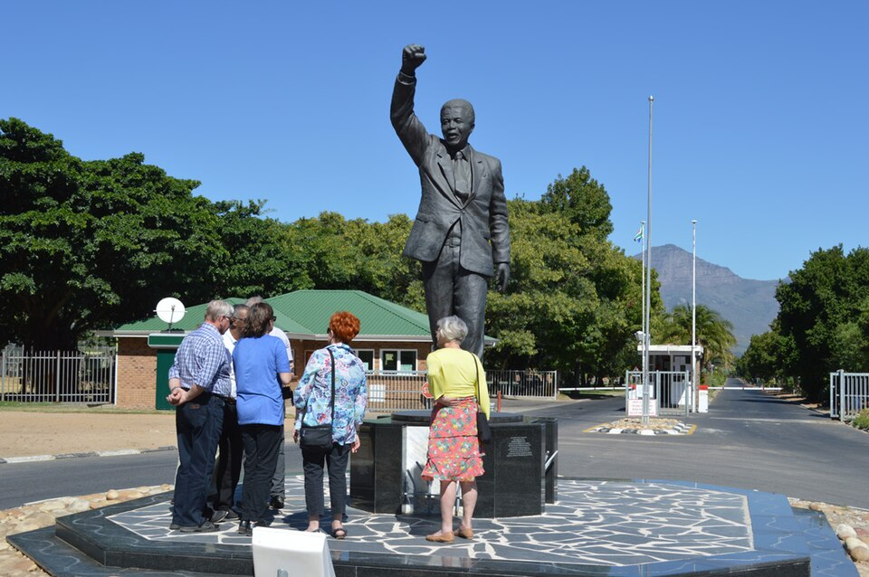
석방의 자리 · 빅터 베르스터(현 드라켄슈타인 교정시설) 정문 앞, 주먹을 든 만델라 동상. 1990년 2월 11일 그가 위니와 함께 걸어 나온 바로 그 자리에 세워졌다. [Wikimedia Commons]
그날 저녁, 만델라는 케이프타운 시청 발코니에 올라 자유의 몸으로 첫 연설을 했다. 광장을 가득 메운 수만 명 앞에서 그는 외쳤다. 자신은 예언자가 아니라 민중의 겸허한 종으로서 이 자리에 섰다고. 사람들은 복수의 외침을 기대했을지 모른다. 그러나 만델라가 다시 꺼낸 것은 26년 전 리보니아 법정에서 한 바로 그 말이었다. 모든 사람이 평등하고 자유롭게 사는 민주 사회의 이상, 자신이 살고자 하고 또 죽을 준비가 되어 있던 그 이상. 종신형의 마지막 문장이, 자유의 첫 문장으로 다시 태어났다.
나는 여기 예언자가 아니라 여러분의 겸허한 종으로 섰습니다. 여러분의 지칠 줄 모르는 영웅적 희생이 오늘 내가 이 자리에 있게 했습니다. 그러므로 남은 내 삶을 여러분의 손에 맡깁니다.
Nelson Mandela, 석방 연설, 케이프타운 시청, 1990년 2월 11일
석방의 순간조차 만델라는 작은 위기를 겪었다. 27년 만에 마주한 군중과 카메라의 거대한 물결 속에서, 그는 한순간 압도당할 뻔했다. 그러나 그는 곧 평정을 되찾고 천천히, 위엄 있게 걸었다. 그가 가장 먼저 한 일은 자신을 가둔 자들을 저주하는 것이 아니라, 27년간 자기를 잊지 않은 전 세계의 사람들에게 감사하는 것이었다. 옥중의 그를 자유의 상징으로 만든 것은 그 자신만이 아니라, "만델라를 석방하라"를 외친 무수한 사람들이었다. 영웅은 홀로 태어나지 않으며, 한 사람을 떠받친 수많은 익명의 손이 함께 그를 만든다는 사실을 그는 누구보다 잘 알았다.
그러나 자유는 곧 더 어려운 과업의 시작이었다. 27년 만에 마주한 남아프리카는 흑인 거주구의 폭력과 정파 간 유혈 충돌로 들끓고 있었다. 협상의 길은 험난했다. 1993년 4월에는 인기 높던 흑인 지도자 크리스 하니가 백인 극우파에게 암살되어 나라가 내전 직전까지 갔다. 그때 대통령도 아니던 만델라가 텔레비전에 나와 전국에 자제를 호소했고, 그의 한 마디가 폭발 직전의 분노를 가까스로 가라앉혔다. 권력 없이도 한 나라를 진정시킬 수 있는 도덕적 권위가 무엇인지를 보여 준 장면이었다.
만델라와 드 클레르크는 4년에 걸쳐 새 헌법과 자유 총선의 틀을 협상했다. 수많은 결렬과 재개, 위기와 타협이 이어졌다. 두 사람은 서로를 깊이 불신하면서도, 함께가 아니면 누구도 미래를 열 수 없다는 사실을 알았다. 1993년, 노벨 위원회는 "인종 분리 정권을 평화적으로 종식하고 새로운 민주 남아프리카의 토대를 놓은" 공로로 두 사람에게 노벨 평화상을 공동 수여했다. 한때의 죄수와 그를 가둔 정권의 마지막 수장이 같은 상을 함께 받은, 역사에 드문 장면이었다.
곁가지 ① — 텔레비전 앞에 선 권력 없는 지도자
1993년 크리스 하니 암살 직후, 남아프리카는 인종 전면 충돌의 벼랑 끝에 섰다. 흥미로운 사실은, 그날 전국에 자제를 호소한 사람이 현직 대통령 드 클레르크가 아니라 아무런 공식 직책도 없던 만델라였다는 점이다. 정부조차 그에게 나라를 진정시켜 달라고 사실상 요청했다. 만델라는 방송에서 암살범을 신고한 사람이 백인 여성이었다는 사실을 강조하며, 이것은 인종의 싸움이 아니라 정의의 싸움이라고 호소했다. 권력의 자리가 아니라 신뢰의 무게가 한 나라를 멈춰 세운 순간이었다. 진정한 권위는 직함에서 오지 않는다는 것을, 그는 대통령이 되기 전에 이미 증명했다.
[Source] Martin Meredith, Mandela: A Biography · 1993년 크리스 하니 암살 관련 보도 기록.
독일
1990년 10월 독일 통일. 만델라가 석방된 바로 그해, 분단의 상징이던 한 나라가 다시 하나가 되었다. 화해와 통합이 시대의 키워드였다.
소련
1991년 소련 해체. 냉전 질서가 완전히 무너지며, 세계는 새 시대로 진입하고 있었다.
한국
1991년 남북한 유엔 동시 가입. 1992년 첫 문민정부 출범 준비. 한반도 역시 권위주의 청산과 화해의 과제 앞에 서 있었다.
Tabula III · 무지개 나라
석방에서 대통령으로, 그리고 진실화해위원회 — 1990~1999년
통합된 새 남아프리카 공화국 자유에서 대통령으로
감옥의 군도였던 같은 땅이, 이제 하나의 무지개 나라가 되었다. 남쪽 끝 케이프타운에서 시작된 자유의 발걸음이 북쪽 프리토리아의 대통령 취임식까지 이어진다.
IX
1994–1999년 · 프리토리아
대통령 · 진실화해위원회
강의 듣기
"한 나라가 자기 과거의 가해자를 감옥에 가두는 대신, 진실을 말하게 했다. 처벌이 아니라 진실이, 화해의 조건이 되었다."
1994년 4월 27일, 남아프리카 역사상 처음으로 모든 인종이 함께 투표하는 총선이 열렸다. 평생 한 번도 표를 던져 본 적 없는 수백만 흑인이 새벽부터 투표소 앞에 몇 시간씩 줄을 섰다. 그 끝없는 줄 자체가 한 시대의 종말과 새 시대의 시작을 알리는 풍경이었다. ANC는 약 62퍼센트의 득표로 압승했고, 1994년 5월 10일, 일흔다섯 살의 넬슨 만델라가 프리토리아 유니언 빌딩에서 남아프리카 최초의 흑인 대통령으로 취임했다. 한때 그를 가둔 정권의 군용기들이 새 대통령을 위해 하늘에서 예포를 쏘았다.
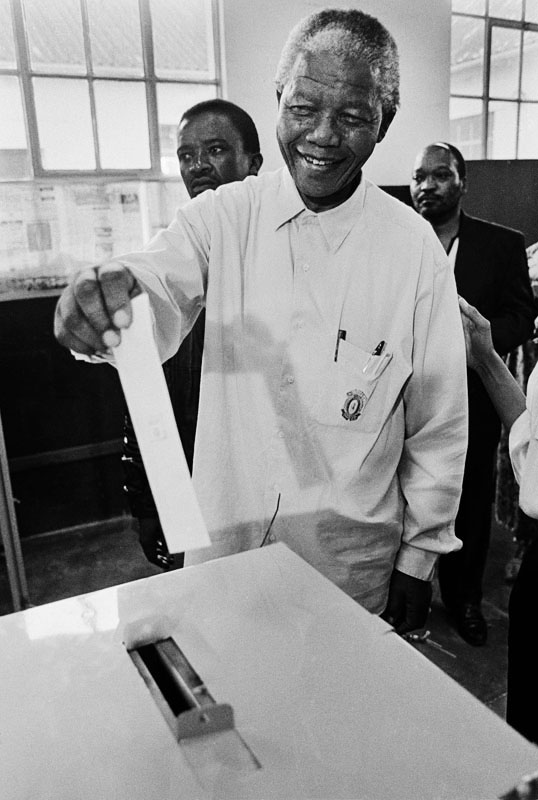
만델라의 첫 자유 투표 · 1994년 4월 27일. 일흔여섯 해를 살며 처음으로 자기 나라에서 한 표를 행사한 순간. 같은 날 수백만 흑인이 평생 처음 투표소에 섰다. [Wikimedia Commons]
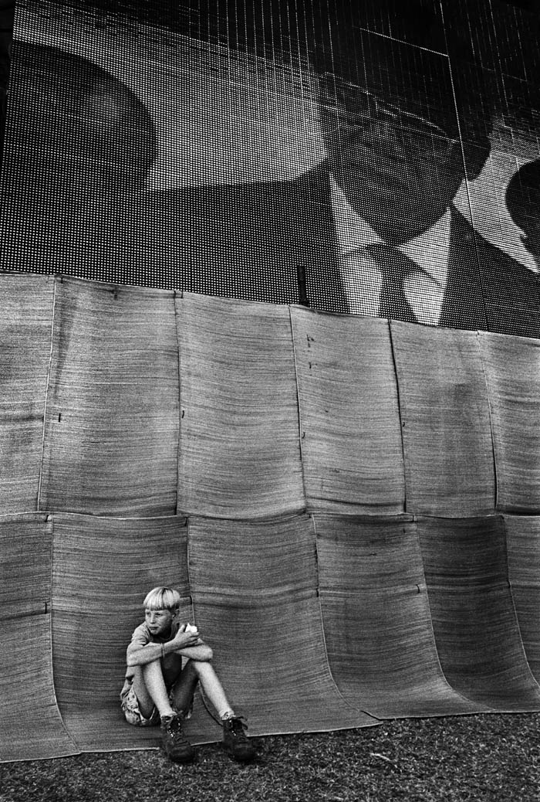
대통령 취임식 · 1994년 5월 10일 프리토리아 유니언 빌딩. 일흔다섯의 만델라가 남아프리카 첫 흑인 대통령으로 취임했다. 전 세계 수많은 귀빈과 수억 명의 시청자가 지켜보았다. [Wikimedia Commons]
취임식 자체가 하나의 거대한 상징이었다. 한때 만델라를 종신형에 처한 바로 그 정권의 군대가, 이제 새 흑인 대통령에게 경례하며 전투기로 하늘에 무지개를 그렸다. 옛 적과 옛 동지가, 백인 장군과 흑인 게릴라 출신이 같은 단상에 나란히 섰다. 세계 각국의 정상들이 지켜보는 가운데, 한 나라가 피의 보복이 아니라 평화로운 정권 교체로 새 시대를 여는 보기 드문 장면이 연출되었다. 많은 전문가가 남아프리카의 미래를 유혈 내전으로 예언했지만, 그 예언은 빗나갔다. 그 예언을 빗나가게 만든 것이 바로 만델라라는 한 사람의 존재였다.
취임 연설에서 만델라는 인종주의의 식민지였던 나라를, 흑인과 백인과 모든 빛깔의 사람이 어우러진 "무지개 나라(rainbow nation)"로 다시 짜겠다고 선언했다. 이 표현은 데스몬드 투투 대주교가 즐겨 쓰던 말이었지만, 만델라의 취임을 통해 새 남아프리카의 정체성을 상징하는 한 단어가 되었다. 그는 복수 대신 통합을 택했다. 백인 공무원들을 대거 유임시키고, 옛 정권의 인사들을 정부에 끌어안았으며, 자신을 가둔 검사와 간수를 취임식에 손님으로 초대했다. 권력을 잡은 피해자가 가해자에게 보복하지 않는다는 것, 그 자체가 가장 강력한 정치 행위였다.
우리는 우리 사이에 평화를 이룰 것이며, 인종주의의 식민지에서 벗어나 이 아름다운 땅을 무지개 나라로 다시 세울 것입니다. 다시는, 결코 다시는 이 땅이 한 사람이 다른 사람을 억압하는 곳이 되지 않을 것입니다.
Nelson Mandela, 대통령 취임 연설, 1994년 5월 10일
만델라 정부의 가장 독창적인 유산은 1995년 출범한 진실화해위원회(Truth and Reconciliation Commission, TRC)였다. 위원장은 노벨 평화상 수상자이자 성공회 대주교인 데스몬드 투투(Desmond Tutu)가 맡았다. 위원회의 발상은 당시로서는 혁명적이었다. 아파르트헤이트 시대의 정치적 범죄를 저지른 자가 법정에서가 아니라 공개 청문회에서 진실을 남김없이 자백하면, 사면을 받을 수 있게 한 것이다. 가해자를 모두 감옥에 보내는 뉘른베르크식 처벌도 아니고, 모든 것을 덮어 버리는 망각도 아닌 제삼의 길이었다.
만델라가 이 길을 택한 데에는 냉정한 현실 인식도 있었다. 새 정부는 군대와 경찰, 행정과 경제의 거의 모든 실권을 여전히 백인이 쥔 상태에서 출범했다. 만약 보복과 처벌의 칼을 빼들었다면, 두려움에 빠진 백인 집단이 무기를 들고 저항하거나 자본과 기술을 가지고 나라를 떠났을 것이고, 남아프리카는 곧 내전과 경제 붕괴로 치달았을 것이다. 화해는 만델라의 고결한 성품의 산물이기도 했지만, 동시에 파국을 피하기 위한 가장 현실적인 선택이기도 했다. 이상주의자로만 알려진 그가 사실은 누구보다 냉철한 현실주의자였다는 점, 바로 그 이중성이 그를 단순한 도덕적 영웅이 아니라 위대한 정치가로 만들었다.
진실화해위원회의 한계도 분명했다. 사면을 받기 위해 형식적으로만 진실을 고백하고 정작 핵심 명령 계통은 끝내 입을 다문 가해자가 적지 않았다. 정권의 최고위 책임자들 다수는 청문회 자체를 거부하거나 "기억나지 않는다"로 일관했다. 피해자에 대한 실질적 배상은 약속보다 훨씬 적었고, 많은 유족이 "진실은 들었으나 정의는 받지 못했다"고 분노했다. 그럼에도 이 불완전한 위원회가 남긴 것은, 한 사회가 자기 과거의 가해자와 피해자를 같은 공간에 마주 앉히고 그 모든 고통을 공개 기록으로 남겼다는 사실이었다. 완벽하지 않은 정의라도 침묵보다는 낫다는 것, 그 어려운 균형 위에 새 남아프리카가 서 있었다.
약 7년간 위원회 앞에서 7천여 명이 사면을 신청하며 자기 범죄를 털어놓았고, 2만 명이 넘는 피해자와 유족이 증언했다. 고문받은 자와 고문한 자가 같은 방에 마주 앉는 일이 거듭됐다. 그것은 결코 완벽한 정의가 아니었다. 많은 유족이 "왜 살인자가 진실을 말했다는 이유만으로 풀려나는가"라고 분노했고, 가해자들이 정작 핵심은 숨겼다는 비판도 끊이지 않았다. 그럼에도 이 모델은 한 사회가 거대한 폭력의 과거를 내전으로 폭발시키지 않고 마주하는 한 방법을 인류에게 제시했다.
진실화해위원회의 청문회는 텔레비전으로 생중계되고 라디오로 전국에 울려 퍼졌다. 온 나라가 매일 자기 과거의 가장 어두운 부분을 함께 들었다. 경찰에 끌려가 고문당하다 죽은 활동가의 사연, 폭탄 테러로 가족을 잃은 백인의 증언, 명령에 따라 사람을 죽였다고 고백하는 보안경찰의 목소리가 차례로 흘러나왔다. 어떤 가해자는 끝내 뉘우치지 않았고, 어떤 피해자는 끝내 용서하지 못했다. 위원회는 그 모든 불완전함을 그대로 드러냈다. 중요한 것은 깔끔한 결론이 아니라, 한 사회가 자기 상처를 숨기지 않고 공개적으로 마주했다는 사실 그 자체였다. 망각 위에 세운 평화는 언젠가 무너지지만, 진실 위에 세운 평화는 비록 고통스러워도 더 오래간다는 믿음이 그 바탕에 있었다.
곁가지 ③ — 두 개의 국가(國歌)를 하나로
새 남아프리카가 마주한 가장 상징적인 난제 가운데 하나는 국가(國歌)였다. 흑인 해방 운동의 찬가였던 「은코시 시켈렐 이아프리카(주여, 아프리카를 축복하소서)」와, 백인 아파르트헤이트 정권의 국가였던 「디 스템(남아프리카의 외침)」은 서로 화해할 수 없는 두 세계를 대표했다. 일부는 옛 백인 국가를 완전히 폐기하자고 했다. 그러나 만델라는 두 노래를 하나로 잇기로 했다. 코사어·줄루어·소토어·아프리칸스어·영어, 다섯 언어가 한 곡 안에서 차례로 흐르는 세계에서 가장 독특한 국가가 그렇게 탄생했다. 적의 노래를 지우는 대신 자기 노래 옆에 나란히 두는 것, 그 한 곡이 무지개 나라의 정신을 무엇보다 잘 보여 준다.
[Source] South African Government, 'National Anthem' 공식 해설 · Nelson Mandela Foundation.
이 진실화해의 모델은 이후 르완다, 시에라리온, 페루, 동티모르, 캐나다, 한국을 포함해 전 세계 수십 개 나라가 자국의 과거사를 다루는 데 참고하는 한 본보기가 되었다. 한 나라의 절박한 실험이, 분쟁 이후 사회를 봉합하는 인류 공통의 도구로 자라난 것이다. 동시에 만델라 정부는 흑인 다수의 삶을 바꾸기 위해 주택·전기·수도·교육 보급에 힘썼지만, 수백 년간 굳어진 경제적 불평등을 단 한 임기에 뒤집을 수는 없었다. 정치적 해방은 이루었으나 경제적 평등은 여전히 미완의 과제로 남았다.
진실화해위원회 (1995–2002)
위원장데스몬드 투투 대주교
원칙완전한 진실 고백 시 사면 가능
사면 신청약 7,000여 건
피해자 증언약 21,000건
최종 보고서전 7권 (1998·2003)
영향전 세계 수십 개국이 모델로 참고
곁가지 ① — 단 한 임기, 스스로 내려놓은 권력
만델라가 보여 준 가장 위대한 결정 가운데 하나는, 무엇을 했느냐가 아니라 무엇을 하지 않았느냐였다. 그는 압도적 인기와 도덕적 권위를 가졌고, 헌법은 재선을 막지 않았으며, 많은 이가 그가 종신 대통령이 되기를 바랐다. 그러나 만델라는 1999년 단 한 임기, 5년 만에 스스로 물러났다. 아프리카의 많은 해방 영웅이 권좌에 눌러앉아 독재자로 변해 가던 시대에, 그는 권력을 후계자 타보 음베키에게 평화롭게 넘겼다. 권력을 잡는 능력보다 내려놓는 절제가 더 어렵고 더 위대하다는 것을, 그는 자신의 퇴장으로 증명했다.
[Source] Nelson Mandela Foundation, 대통령 임기 기록 · Anthony Sampson, Mandela: The Authorised Biography.
곁가지 ② — 고문한 자와 마주 앉은 어머니
진실화해위원회 청문회에서 가장 오래 기억된 장면 가운데 하나는, 아들을 고문해 죽인 경찰과 마주 앉은 한 어머니의 모습이었다. 어떤 유족은 가해자를 용서했고, 어떤 유족은 끝내 용서할 수 없다고 했다. 위원회는 용서를 강요하지 않았다. 다만 무슨 일이 있었는지 진실을 듣게 했다. 자식의 시신이 어디에 묻혔는지조차 모르던 부모들이, 가해자의 입을 통해 비로소 마지막 행방을 알게 되는 일도 있었다. 진실은 정의를 완전히 대신하지 못한다. 그러나 진실 없이는 어떤 화해도 시작될 수 없다는 것을, 그 방의 침묵과 눈물이 보여 주었다.
[Source] Desmond Tutu, No Future Without Forgiveness(용서 없이 미래 없다), 1999 · TRC 최종 보고서.
르완다
같은 1994년, 르완다에서 약 100일간 80만 명이 학살되는 제노사이드가 벌어졌다. 한쪽에서는 평화로운 화해가, 다른 쪽에서는 대량 학살이 일어난 같은 해. 아프리카가 두 갈래 미래 사이에 서 있었다.
구 유고슬라비아
발칸의 인종 청소와 전쟁. 냉전 후 세계 곳곳에서 묵은 인종·종교 갈등이 폭발하던 시대, 남아프리카의 평화적 이행은 더욱 빛났다.
한국
1995년 과거사 청산 논의, 옛 정권 책임자 단죄. 한국 역시 화해와 처벌 사이에서 자기만의 길을 모색하고 있었다.
X
1995–2013년 · 요하네스버그
인빅터스 · 마지막 별
강의 듣기
"나는 내 운명의 주인이요, 나는 내 영혼의 선장이다."
1995년, 남아프리카가 럭비 월드컵을 개최했다. 럭비는 오랫동안 백인 아프리카너의 스포츠였고, 흑인들에게는 억압자의 상징이었다. 많은 흑인이 자국 대표팀 스프링복스가 지기를 바랐다. 그러나 만델라는 정반대의 길을 택했다. 그는 백인의 상징이던 스프링복스를 흑인까지 아우르는 온 국민의 팀으로 끌어안기로 했다. 결승전 날, 만델라는 한때 적의 상징이던 스프링복스 유니폼과 모자를 쓰고 경기장에 나타났다. 6만 5천 명의 거의 백인뿐인 관중이 처음엔 놀라 침묵하다가, 이내 "넬슨! 넬슨!"을 연호하기 시작했다.
이 결단에는 깊은 정치적 계산이 깔려 있었다. 새 정부의 흑인 지지자 다수는 스프링복스를 해체하고 그 이름과 상징을 없애 버리기를 원했다. 그것은 손쉬운 승리이자 통쾌한 복수였을 것이다. 그러나 만델라는 정반대로 갔다. 그는 백인이 가장 아끼는 상징을 빼앗는 대신, 그것을 온 국민의 것으로 끌어안아 백인들로 하여금 새 남아프리카가 자신들을 내치지 않으리라는 믿음을 갖게 했다. 두려움에 떨던 백인 소수에게 "당신들도 이 나라의 일부"라는 메시지를 스포츠 한 경기로 전한 것이다. 적을 무장 해제시키는 가장 강력한 무기가 관용이라는 것을, 그는 또 한 번 증명했다.
남아프리카가 우승했고, 만델라가 백인 주장 프랑수아 피나르에게 트로피를 건네는 장면은 새 나라의 통합을 상징하는 한 컷이 되었다. 한 벌의 유니폼이 수백 년의 적대를 단 90분 동안 누그러뜨린 것이다. 이 이야기는 2009년 클린트 이스트우드 감독의 영화 「인빅터스(Invictus)」로 만들어졌다. 모건 프리먼이 만델라를, 맷 데이먼이 피나르를 연기했다. 제목 "인빅터스"는 만델라가 옥중에서 마음을 다잡으며 외웠다고 전해지는 윌리엄 어니스트 헨리의 시 제목으로, "나는 내 운명의 주인, 나는 내 영혼의 선장이다"라는 구절로 끝난다.
나는 내 운명의 주인이요, 나는 내 영혼의 선장이다.
William Ernest Henley, 'Invictus' (만델라가 즐겨 읊은 시구)
대통령 만델라는 화려한 정책가라기보다 통합의 상징에 가까웠다. 일상의 국정 운영은 부통령 타보 음베키에게 상당 부분 맡기고, 자신은 갈라진 나라를 하나로 묶는 일에 집중했다. 그는 자신을 가둔 검사를 점심에 초대했고, 옛 정권의 영부인을 찾아가 차를 마셨으며, 백인 럭비팀을 응원하고 흑인 거주구의 학교를 방문했다. 어떤 이는 이를 두고 그가 거대한 구조적 불평등 대신 상징적 화해에만 매달렸다고 비판하기도 한다. 그러나 적대와 보복이 너무도 자연스러웠을 그 순간에, 한 지도자가 끝까지 관용을 선택했다는 사실 자체가 남아프리카를 내전의 벼랑에서 끌어내렸다. 그가 무엇을 이루었는가 못지않게, 그가 무엇을 하지 않았는가가 그 시대를 구했다.
1999년, 만델라는 약속대로 단 한 임기 만에 대통령직에서 물러났다. 그러나 그의 활동은 끝나지 않았다. 그는 넬슨 만델라 재단을 통해 에이즈 퇴치, 아동 빈곤, 평화 중재에 헌신했다. 특히 에이즈 문제는 그에게 개인적인 아픔이기도 했다. 2005년, 그는 아들 막가토가 에이즈 합병증으로 사망했다는 사실을 직접 공개했다. 당시 남아프리카에서 에이즈는 쉬쉬하는 수치스러운 병이었다. 전직 대통령이 자기 아들의 사인을 공개적으로 밝힌 것은, 침묵의 낙인을 깨려는 용기 있는 결단이었다. 권력에서 내려온 뒤에도 그는 여전히 가장 먼저 자기를 던져 모범을 보였다.
대통령 만델라 · 1994년, 일흔다섯에 첫 흑인 대통령에 오른 해. 두 팔을 활짝 벌려 인사하는 모습은 그의 가장 사랑받은 이미지가 되었다. [Wikimedia Commons]
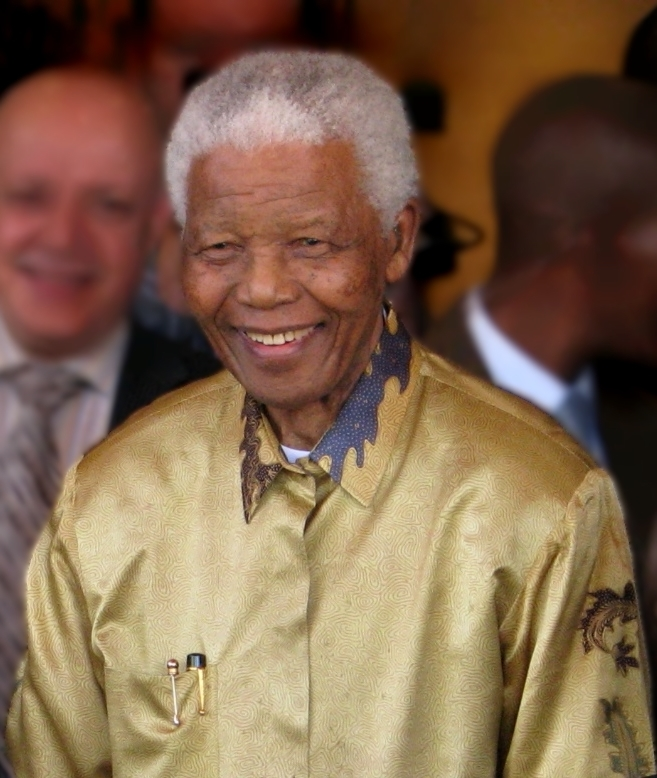
만델라 · 2008년 무렵 · 권력에서 물러난 뒤의 노년. 에이즈 퇴치와 평화 중재에 헌신하던 시기다. 90세 생일은 전 세계가 함께 기념했다. [Wikimedia Commons · CC]
노년의 만델라는 자신을 둘러싼 신화를 경계했다. 그는 "나를 성인으로 만들지 말라, 나는 그저 계속 노력한 죄인일 뿐"이라고 말하곤 했다. 자신의 실수와 약점을 숨기지 않았고, 첫 두 번의 결혼이 정치 때문에 깨진 것을 평생의 회한으로 안고 살았다. 여든 살 생일에 그는 모잠비크 초대 대통령의 미망인 그라사 마셸과 세 번째 결혼을 했다. 평생 투쟁과 감옥에 바친 그가 노년에야 비로소 안정된 가정의 따스함을 찾은 것은, 그가 치른 희생의 크기를 역설적으로 보여 준다. 위대한 공적 삶의 뒤편에는 늘 채우지 못한 사적 삶의 빈자리가 있었다.
말년의 그는 자주 병상에 누웠지만, 그를 찾는 발길은 끊이지 않았다. 세계의 지도자들, 옛 동지들, 그리고 그가 한 번도 만난 적 없는 평범한 사람들이 그의 안부를 물었다. 그는 자신의 죽음이 한 시대의 끝이 되리라는 것을 알았고, 그래서 더욱 후손들에게 당부했다. 자신을 우상으로 떠받들기보다, 자신이 못다 이룬 일을 이어가 달라고. 자유는 한 사람이 완성하는 것이 아니라 여러 세대가 이어 걷는 길이며, 자기 몫의 길을 걸은 뒤에는 다음 사람에게 횃불을 넘겨야 한다는 것이 그의 마지막 메시지였다.
곁가지 ③ — 467/64, 한 죄수 번호의 부활
로벤 섬에서 만델라의 죄수 번호는 466/64였다. 1964년에 들어온 466번째 죄수라는 뜻의 차갑고 비인간적인 숫자였다. 그런데 2003년, 만델라 자신이 이 번호를 거꾸로 끌어안았다. 그는 에이즈 인식 개선을 위한 세계적 콘서트 운동에 "46664"라는 이름을 붙였다. 한때 자신을 한낱 번호로 지워 버리려던 그 숫자를, 수백만 명의 생명을 구하는 캠페인의 이름으로 되살린 것이다. 모욕의 상징을 희망의 상징으로 뒤집는 이 발상은 그의 일생을 압축한다. 그는 자기에게 가해진 상처를 원한으로 키우는 대신, 더 큰 선의 도구로 변형시켰다. 감옥의 숫자가 자유의 노래가 된 것이다.
[Source] 46664 Campaign 공식 기록 · Nelson Mandela Foundation, 'Prisoner 466/64'.
2013년 12월 5일, 넬슨 만델라가 요하네스버그 자택에서 아흔다섯의 나이로 눈을 감았다. 남아프리카는 열흘간의 국가 애도에 들어갔다. 전 세계 약 100명의 국가 원수와 정부 수반, 그리고 수많은 시민이 추모식에 모였다. 미국·중국·인도·유럽의 지도자들이 한자리에 섰고, 평소 적대하던 나라의 정상들조차 그의 죽음 앞에서는 함께 고개를 숙였다. 한 사람의 장례식이 잠시나마 적대하던 세계를 한자리에 모은, 인류사에 드문 순간이었다.
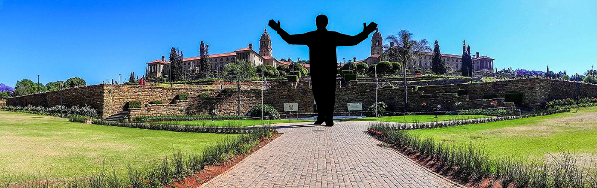
프리토리아 유니언 빌딩의 만델라 동상 · 그가 1994년 대통령 취임 선서를 한 바로 그 자리에, 그가 떠난 직후 높이 약 9미터의 동상이 세워졌다. 두 팔을 벌린 자세는 온 나라를 끌어안는 그의 화해 정신을 형상화한 것이다. [Wikimedia Commons · CC]
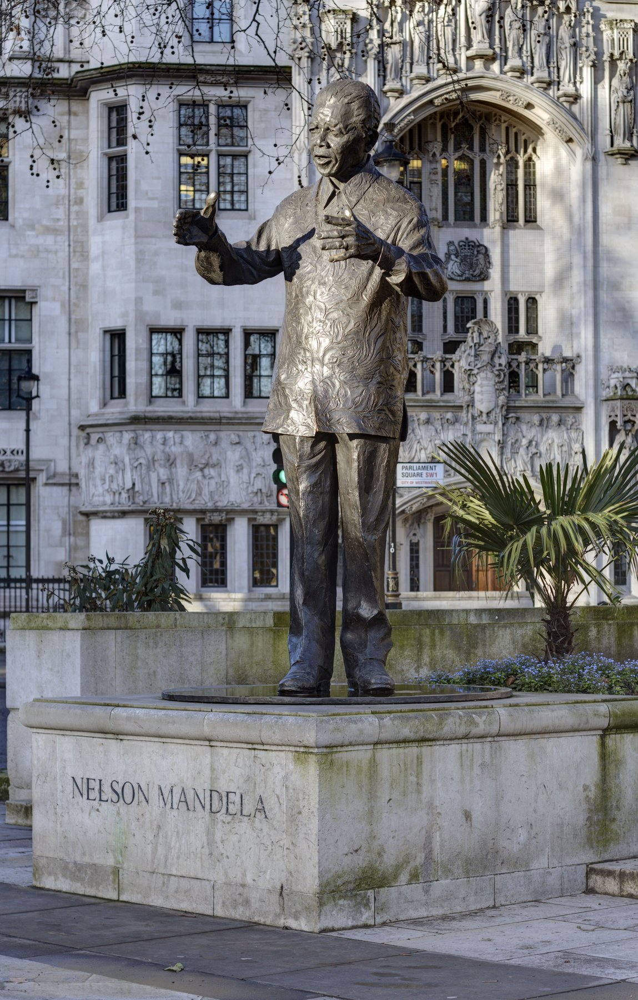
런던 국회의사당 광장의 만델라 동상 · 2007년 건립. 처칠·링컨·간디의 동상 곁에 한 흑인 자유 투사의 동상이 섰다. 한때 영국 정부가 "테러리스트"로 분류했던 인물이, 영국 민주주의의 가장 신성한 광장에 자리한 것이다. [Wikimedia Commons · CC]
곁가지 ① — 만델라의 날, 67분
유엔은 만델라의 생일인 7월 18일을 "넬슨 만델라 국제의 날"로 지정했다. 이날 사람들은 67분 동안 남을 위한 봉사를 한다. 67분은 만델라가 인권과 자유를 위해 싸운 67년(1942년 정치 활동 시작부터 2009년까지)을 기리는 숫자다. 한 사람의 삶의 길이가 전 세계 수백만 명이 매년 선행을 실천하는 단위가 된 것이다. 영웅을 동상으로만 기념하는 대신, 그가 살았던 방식을 잠시라도 따라 살아 보게 하는 이 발상은 만델라가 평생 강조한 한 가지를 담고 있다. 위대함은 멀리 있는 누군가의 것이 아니라, 지금 내가 내미는 한 손에서 시작된다는 것이다.
[Source] United Nations, 'Nelson Mandela International Day' 결의(2009) · Nelson Mandela Foundation.
곁가지 ② — 가짜 수화 통역사
2013년 만델라 추모식에는 후일담이 하나 따라붙었다. 전 세계 지도자들이 추도사를 하는 동안 무대 옆에서 수화 통역을 하던 남성이, 알고 보니 아무 의미 없는 손짓을 반복한 가짜 통역사였던 것이다. 청각 장애인 시청자들은 단 한 마디도 이해할 수 없었다. 이 어처구니없는 사건은 세계적 망신이 되었지만, 동시에 거대한 추모의 무대 뒤에도 허술함과 인간적 결함이 숨어 있음을 보여 준 씁쓸한 일화로 남았다. 가장 엄숙한 순간조차 완벽하지 않다는 것, 그리고 역사는 영웅의 빛만이 아니라 그 곁의 균열까지 함께 기록한다는 사실을 새삼 일깨운다.
[Source] BBC·AP 2013년 12월 추모식 보도 · 남아프리카 정부 사후 조사 발표.
전 세계
2013년 12월, 미국 오바마 대통령을 비롯해 100명에 가까운 정상이 추모식에 모였다. 오바마와 쿠바의 라울 카스트로가 악수하는 장면이 화제가 되었다. 적대하던 나라들조차 만델라 앞에서는 잠시 손을 맞잡았다.
아프리카
만델라의 죽음은 식민 해방 1세대 지도자 시대의 사실상의 종언이었다. 대륙은 그가 남긴 화해의 유산과 미완의 경제 정의라는 두 숙제를 함께 물려받았다.
한국
한국 정부와 시민사회도 깊은 애도를 표했다. 광주의 오월 정신과 만델라의 화해 정신을 잇는 연대의 목소리가 이어졌다.
XI
Aliae Visiones · 다른 시선들
다른 시선 — 위니 · 투투 · 드 클레르크
강의 듣기
"한 위대한 사람이 위대한 화해를 만들었다. 그러나 그 화해에는 그늘이 있었고, 그 그늘을 함께 보아야 그를 온전히 알 수 있다."
성인(聖人)으로만 그려진 만델라는 절반의 만델라다. 그를 신화에서 끌어내려 한 인간으로 마주할 때, 우리는 더 정직하고 더 깊은 교훈을 얻는다. 그의 곁에는 그를 사랑하고 비판하고 배신하고 또 완성한 사람들이 있었고, 그들의 시선을 통해 볼 때 만델라라는 인물의 입체가 비로소 드러난다. 여기, 가장 가까웠던 네 개의 시선과 오늘의 시선을 나란히 놓는다.
① 위니의 시선 — 다른 길을 간 동지이자 아내
위니 마디키젤라 만델라(1936–2018)는 단지 만델라의 아내가 아니라 그 자체로 거대한 정치적 인물이었다. 만델라가 27년을 갇혀 있는 동안 그녀는 바깥에서 저항의 살아 있는 얼굴이었고, 가택연금·구금·고문을 견디며 "민족의 어머니"로 불렸다. 그러나 1980년대 후반, 그녀의 노선은 만델라의 화해와 정반대로 치달았다. 그녀는 흑인 협력자로 의심받는 이들을 타이어를 씌워 불태우는 처형 방식 "네크레이싱"을 공개적으로 옹호하는 듯한 발언을 했고, 그녀를 따르던 경호 조직이 1989년 14세 소년 스톰피 모에케체의 납치·살해에 연루되었다. 그녀는 훗날 이 사건으로 유죄 판결을 받았다. 만델라는 석방 후 결국 1996년 그녀와 이혼했다. 같은 적과 싸운 두 사람이 정반대의 방법을 택했다는 사실, 그리고 위대한 화해의 사도가 자기 가정의 가장 깊은 균열은 끝내 화해시키지 못했다는 사실. 영웅에게도 어찌할 수 없는 그늘이 있었다.
[Source] Anné Marie du Preez Bezdrob, Winnie Mandela: A Life · TRC 최종 보고서 · 1991년 재판 기록.
② 투투의 시선 — 비판할 줄 아는 동지
성공회 대주교 데스몬드 투투(Desmond Tutu, 1931–2021)는 진실화해위원회를 이끈 만델라의 가장 가까운 도덕적 동지였다. 그러나 그는 만델라와 ANC의 충실한 거수기가 결코 아니었다. 그는 ANC 정부가 권력에 안주하며 부패하고 빈곤을 방치하자 가차 없이 비판했다. 그는 "ANC가 옛 압제자들이 하던 짓을 우리 국민에게 한다면, 나는 그 ANC와도 싸울 것"이라고 공언했다. 만델라 역시 그의 비판을 적대가 아니라 우정의 증거로 받아들였다. 진정한 동지란 함께 박수 치는 사람이 아니라, 필요할 때 정직하게 반대할 수 있는 사람이라는 것을 두 사람의 관계가 보여 준다. 권력에 대한 충성보다 진실에 대한 충성이 먼저라는 원칙을, 투투는 평생 지켰다.
[Source] John Allen, Rabble-Rouser for Peace: The Authorised Biography of Desmond Tutu · Desmond Tutu, No Future Without Forgiveness.
③ 드 클레르크의 시선 — 옛 적이 된 동반자
F.W. 드 클레르크(1936–2021)는 아파르트헤이트의 마지막 백인 대통령이자, 그것을 스스로 끝낸 인물이라는 모순된 자리를 차지한다. 그는 1990년 만델라를 풀어주고 ANC를 합법화하고 다인종 총선을 받아들였으며, 그 공로로 만델라와 노벨 평화상을 공동 수상했다. 그러나 그는 아파르트헤이트 자체에 대해 끝까지 충분히 사죄하지 않았다는 비판을 받았다. 그는 한 인터뷰에서 아파르트헤이트가 "도덕적으로 정당화될 수 없다"고 인정하면서도, 그것이 본래 선의에서 출발한 분리 발전 정책이었다는 식의 변명을 덧붙여 거센 반발을 샀다. 만델라조차 협상 중 그를 공개적으로 비난한 적이 있다. 가해 진영의 한 사람이 어디까지 자기 과거를 정직하게 마주할 수 있는가, 드 클레르크는 그 한계를 동시에 보여 준 인물이었다. 화해는 한쪽의 관용만으로 완성되지 않으며, 다른 쪽의 정직한 반성을 함께 요구한다.
[Source] F.W. de Klerk, The Last Trek – A New Beginning · 1993 Nobel Peace Prize 기록 · 협상기 관련 보도.
④ 영화 「인빅터스」의 시선 — 신화가 된 한 측면
2009년 클린트 이스트우드의 「인빅터스」는 만델라의 한 단면, 곧 럭비를 통한 백인과의 화해를 감동적으로 그렸다. 그러나 비판자들은 이 영화가 만델라를 "백인을 용서한 인자한 노인"으로만 축소했다고 지적한다. 영화는 그가 평생 외친 토지 개혁, 경제 정의, 흑인 다수의 빈곤 같은 더 불편한 주제는 거의 다루지 않는다. 화해의 만델라는 누구나 사랑하지만, 부의 재분배를 요구한 급진적 만델라는 자주 잊힌다. 한 위대한 인물의 가장 부담 없는 측면만 골라 신화로 만드는 일은, 그를 기리는 동시에 그를 길들이는 일이기도 하다. 우리가 기억하기로 선택한 만델라는, 사실 우리 자신이 어떤 정의를 감당할 준비가 되어 있는지를 비추는 거울이다.
[Source] John Carlin, Playing the Enemy: Nelson Mandela and the Game That Made a Nation · 영화 「Invictus」(2009) 비평.
⑤ 오늘의 시선 — 미완의 화해, 그리고 오늘의 교훈
만델라가 떠난 지 10여 년, 남아프리카는 여전히 세계에서 가장 불평등한 나라 가운데 하나다. 흑인이 인구의 다수지만 토지와 부의 상당 부분은 여전히 백인 소수와 새 흑인 엘리트의 손에 있다. 줄리어스 말레마의 경제자유투사들(EFF) 같은 정당은 만델라가 백인 자본과 너무 일찍, 너무 많이 타협했다고 비판한다. 그의 화해는 내전을 막고 민주주의를 세웠지만, 경제적 정의라는 더 무거운 숙제를 다음 세대에 넘겼다. 여기서 두 가지 오늘의 교훈을 길어 올릴 수 있다. 첫째, 적을 이해하려는 의지가 적을 동반자로 바꾼다. 만델라가 옥에서 적의 언어를 배운 그 인내가, 끝내 한 나라의 내전을 막았다. 둘째, 모든 위대한 일은 한 세대 안에 완성되지 않는다. 만델라가 정치적 자유를 이뤘듯, 경제적 정의를 이루는 일은 다음 세대의 몫이다. 그가 남긴 것은 완성된 천국이 아니라, 더 나은 미래로 향하는 머나먼 길의 한 구간이었다.
[Source] Hein Marais, South Africa Pushed to the Limit · World Bank, South Africa 불평등 보고서 · EFF 정책 문서.
⑥ 스티브 비코의 시선 — 만델라가 갇혀 있던 사이의 또 다른 목소리
만델라가 로벤 섬에 갇혀 있던 1960~70년대, 바깥에서는 또 다른 젊은 사상가가 흑인 해방의 새 언어를 벼리고 있었다. 스티브 비코(Steve Biko, 1946–1977)가 주도한 흑인 의식 운동(Black Consciousness Movement)이었다. 비코는 흑인이 먼저 자기 자신을 열등하게 여기는 마음의 사슬부터 끊어야 한다고 외쳤다. "억압자의 가장 강력한 무기는 피억압자의 마음"이라는 그의 말은 한 세대를 일깨웠고, 1976년 소웨토 봉기의 사상적 토양이 되었다. 비코는 1977년 경찰 구금 중 고문으로 서른한 살에 목숨을 잃었다. 만델라가 협상과 화해의 큰길을 닦았다면, 비코는 흑인의 자존이라는 더 깊은 뿌리를 건드렸다. 한 민족의 해방은 한 영웅의 서사가 아니라, 서로 다른 길을 간 여러 사람의 합창이었음을 비코의 짧고 강렬한 삶이 일깨운다.
[Source] Steve Biko, I Write What I Like · TRC 보고서(비코 사망 관련 증언) · SAHO, 'Black Consciousness Movement'.
⑦ 마디바, 한 단어가 된 사람
오늘날 남아프리카 사람들은 만델라를 부를 때 "만델라 전 대통령"이라는 직함보다 "마디바"라는 씨족 이름을 즐겨 쓴다. 그것은 존경과 애정, 친근함이 한데 담긴 호칭이다. 그의 얼굴은 남아프리카 모든 지폐에 새겨졌고, 공항과 다리와 학교에 그의 이름이 붙었다. 그러나 정작 그 자신이 가장 경계한 것이 이 신격화였다. 그는 "나는 성인이 아니다. 굳이 성인을 정의해야 한다면, 계속 노력하기를 멈추지 않은 죄인일 뿐"이라고 말했다. 한 사람을 완벽한 우상으로 모시는 일은 편안하지만 위험하다. 그것은 그가 보여 준 길을 우리가 직접 걸을 책임에서 면제해 주기 때문이다. 마디바가 우리에게 남긴 것은 따라야 할 우상이 아니라, 이어서 걸어야 할 길이었다.
[Source] Nelson Mandela, Conversations with Myself · Nelson Mandela Foundation, 'The meaning of Madiba'.